Pâine cu maia

Baghetă 300g
Baghetă 300g
Ingrediente: făină albă de grâu 650 Eco, apă, maia naturală de grâu, făină integrală de grâu Eco, făină de secară Eco, sare.
Declarație nutrițională: / 100g - Valoare energetică: 1094,82KJ / 260,67 kcal. Lipide 0,91g din care saturate 0,27g. Glucide 53,85g din care zaharuri 0,45g. Proteine 7,66g. Sare 1,43g.
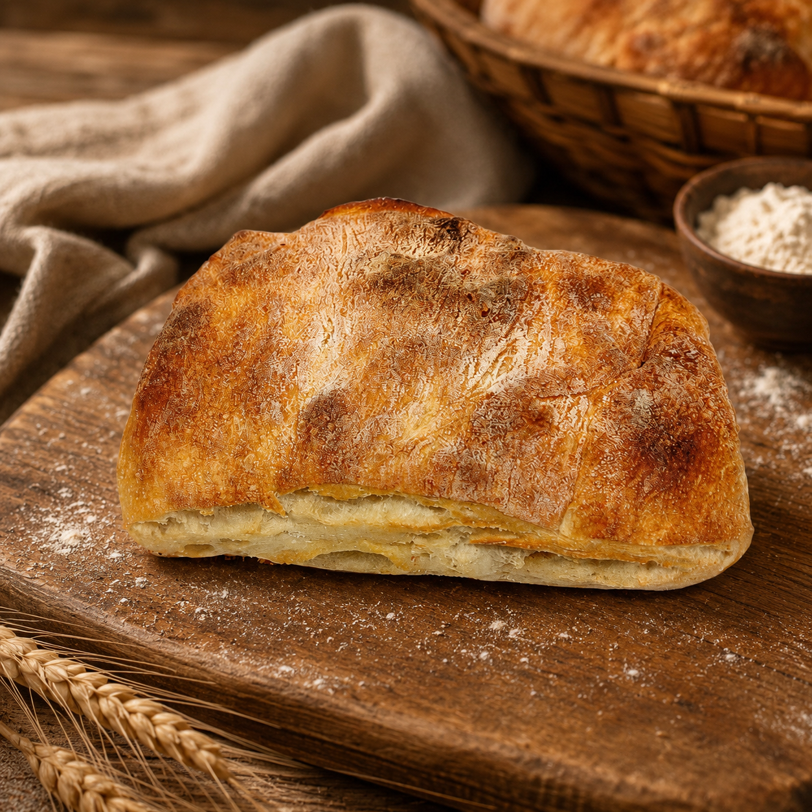
Ciabatta
Ciabatta
Ingrediente: făină albă de grâu 650 bio, apă, maia naturală de grâu, făină integrală de grâu bio, făină de secară, sare.
Declarație nutrițională: / 100g - Valoare energetică: 1094,82 KJ / 260.67 kcal. Lipide 0,91g din care saturate 0,27g. Glucide 53,85g din care zaharuri 0,45g. Proteine 7,66g. Sare 1,43g.
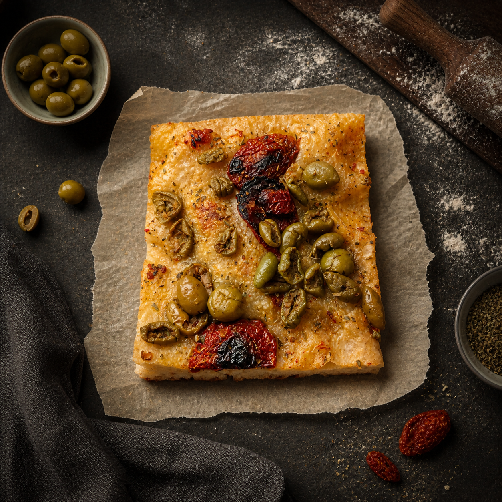
Foccacia cu legume 120g
Foccacia cu legume 120g
Ingrediente: făină albă de grâu, apă, făină integrală de grâu, făină de secară, sare, piper, legume, maia.
Declarație nutrițională: / 100g - Valoare energetică: 865,58 KJ / 206,09 kcal. Lipide 2,33g din care saturate 0,39g. Glucide 39,39g din care zaharuri 2,06g. Proteine 5,59g. Sare 1,57g.
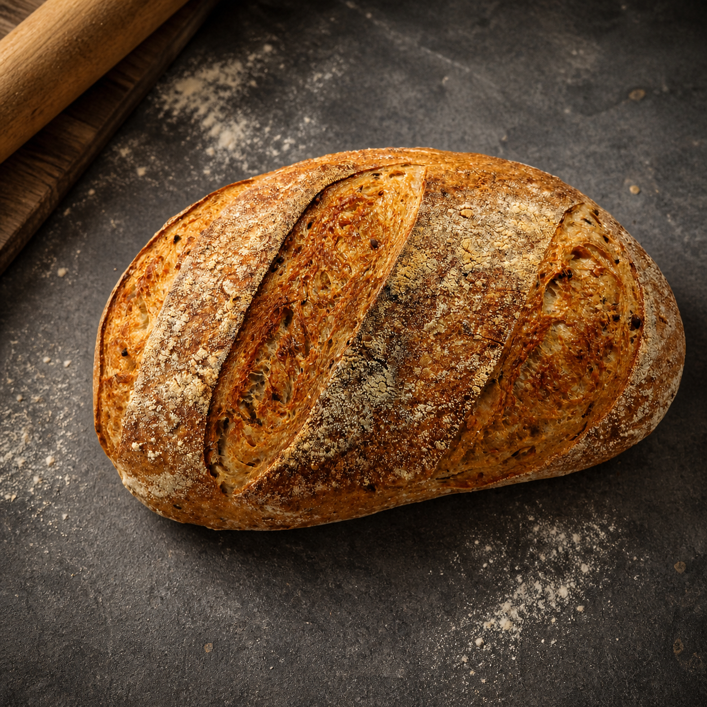
Pâinea casei 500g/ 800g/ 1500g
Pâinea casei 500g/ 800g/ 1500g
Ingrediente: făină albă de grâu 650 Eco, apă, maia naturală de grâu, făină integrală de grâu Eco, făină de secară, sare.
Declarație nutrițională: / 100g - Valoare energetică: 1094,82 KJ / 260,67kcal. Lipide 0,91g din care saturate 0,27g. Glucide 53,85g din care zaharuri 0,45g. Proteine 7,66g. Sare 1,43g.
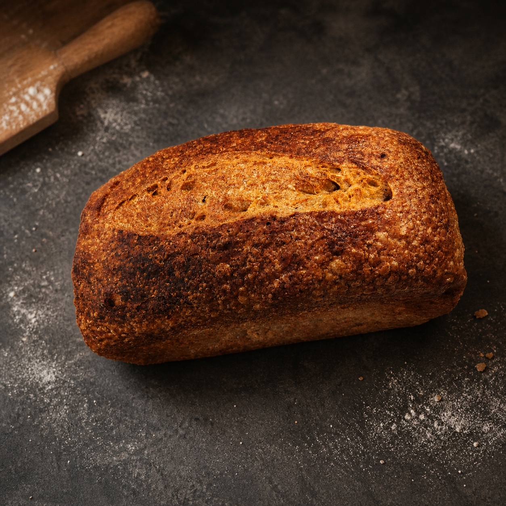
Pâine cu chimen și semințe de dovleac
Pâine cu chimen și semințe de dovleac
Ingrediente: apă, făină de grâu 650 Eco, făină de secară, semințe de dovleac (3,64%), semințe de chimen (0,73%), sare, maia.
Declarație nutrițională: / 100g - Valoare energetică: 964,66 KJ / 229,68kcal. Lipide 0,96g din care saturate 0,20g. Glucide 38,86g din care zaharuri 0,05g. Proteine 9g. Sare 1,37g.
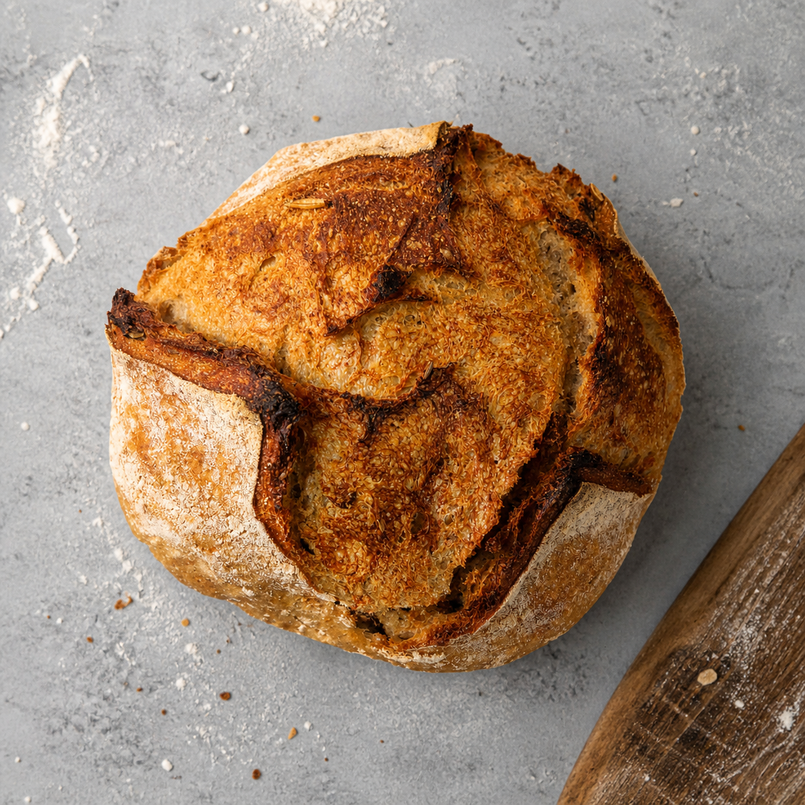
Pâine cu chimen și semințe de dovleac pe vatră
Pâine cu chimen și semințe de dovleac pe vatră
Ingrediente:
Declarație nutrițională:
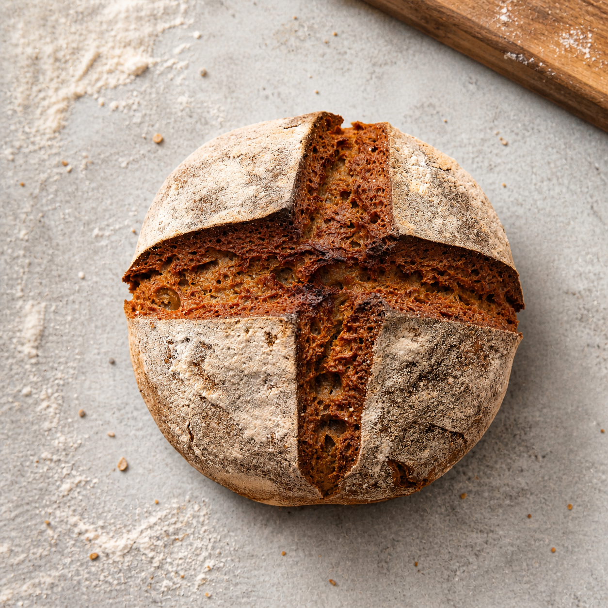
Paine Einkorn 500g
Paine Einkorn 500g
Ingrediente: făină de Einkorn bio, maia din făină de grâu, sare.
Declarație nutrițională: / 100g - Valoare energetică: 904,26KJ / 217,30kcal. Lipide 2,05g din care saturate 0,04g. Glucide 38,86g din care zaharuri 0,05g. Proteine 9g. Sare 1,37g.
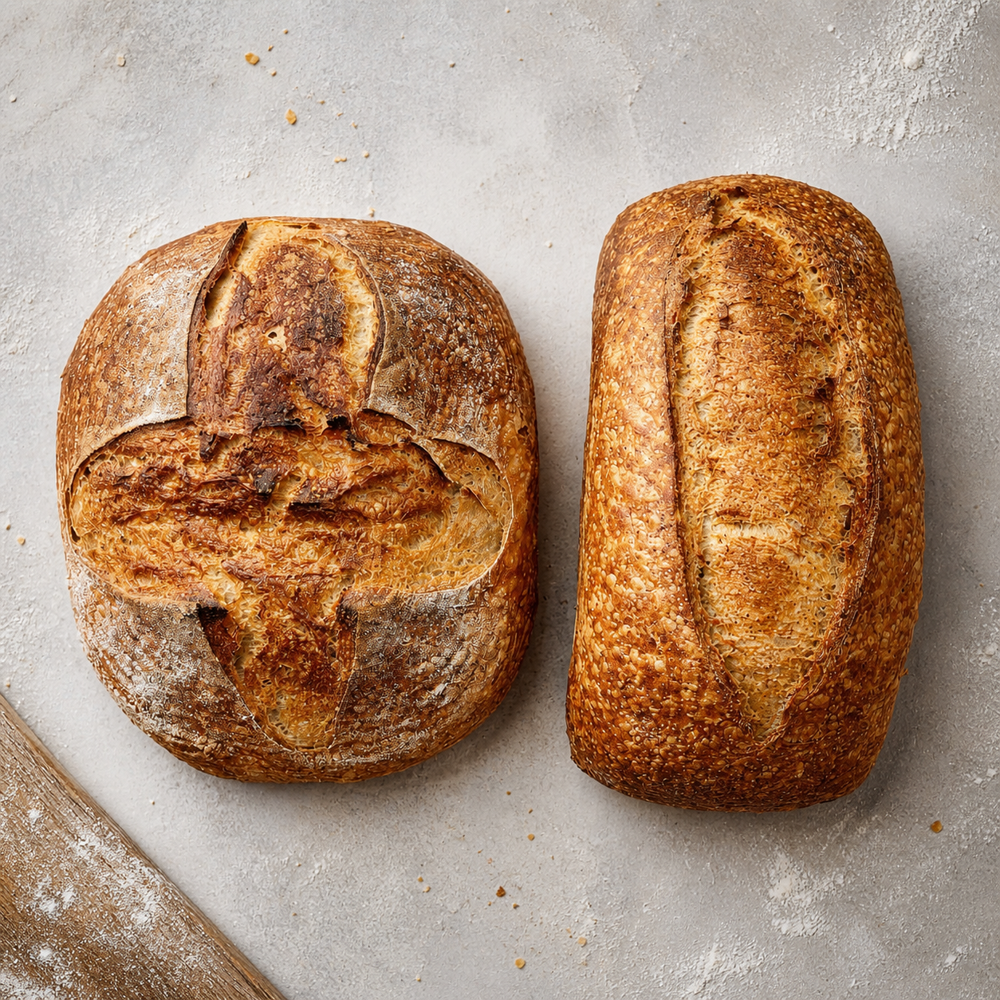
Pâine integrală de grâu 500g
Pâine integrală de grâu 500g
Ingrediente: făină integrală de grâu Eco, apă, maia naturala de grâu, sare.
Declarație nutrițională: / 100g - Valoare energetică: 11134,30kJ / 270,07kcal. Lipide 1,44g din care saturate 0,23g. Glucide 53,85g din care zaharuri 0,32g. Proteine 9,75g. Sare 1,53g.
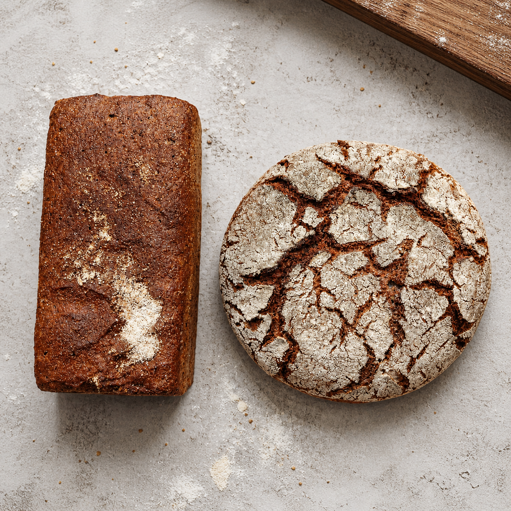
Pâine integrală de secară 500g
Pâine integrală de secară 500g
Ingrediente: făină de secară, apă, maia naturală de secară, sare.
Declarație nutrițională: / 100g - Valoare energetică: 957,1KJ / 227,88 kcal. Lipide 0,98g din care saturate 0,16g. Glucide 47,83g din care zaharuri 0,88g. Proteine 5,07g. Sare 0,92g.
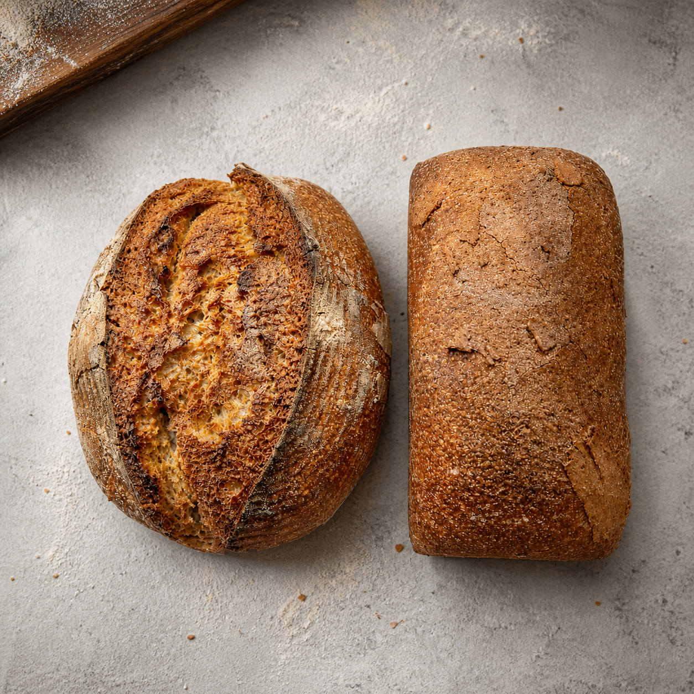
Pâine integrală spelta 500g
Pâine integrală spelta 500g
Ingrediente: făină spelta bio, maia din făină de grâu, sare.
Declarație nutrițională: / 100g - Valoare energetică: 1101,29KJ / 262,61 kcal. Lipide 0,11g din care saturate 0,04g. Glucide 54,65g din care zaharuri 0,05g. Proteine 9,05g. Sare 1,10g.
Pâine cu maia din făinuri fără gluten
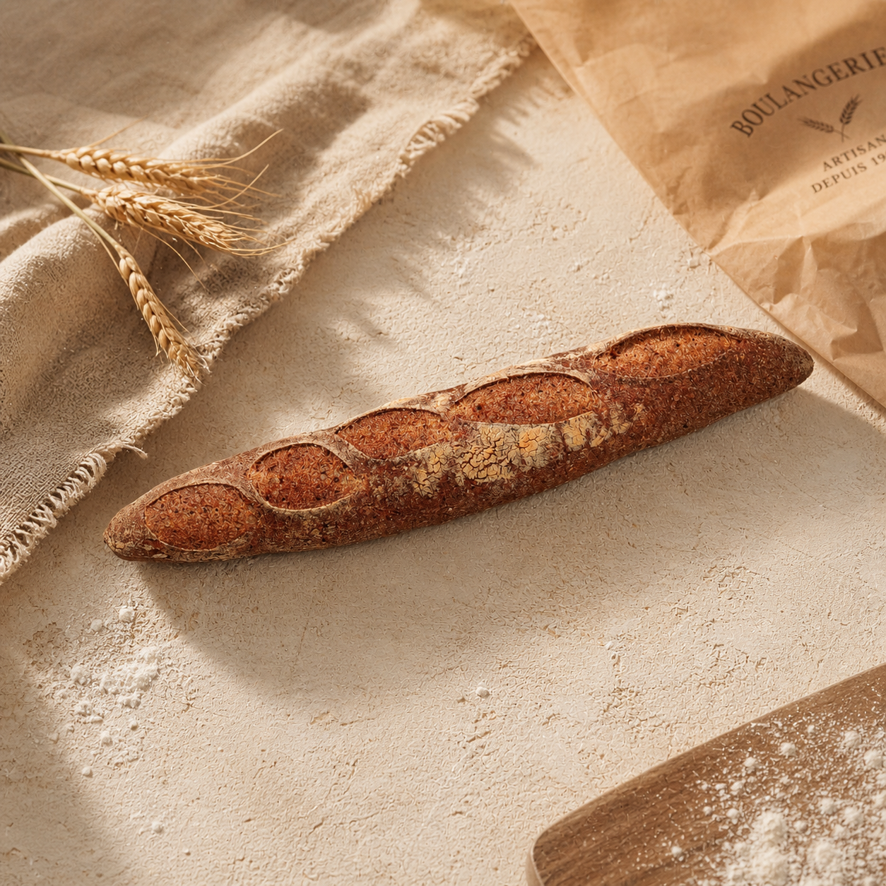
Baghetă fără gluten
Baghetă fără gluten
Ingrediente:
Declarație nutrițională:
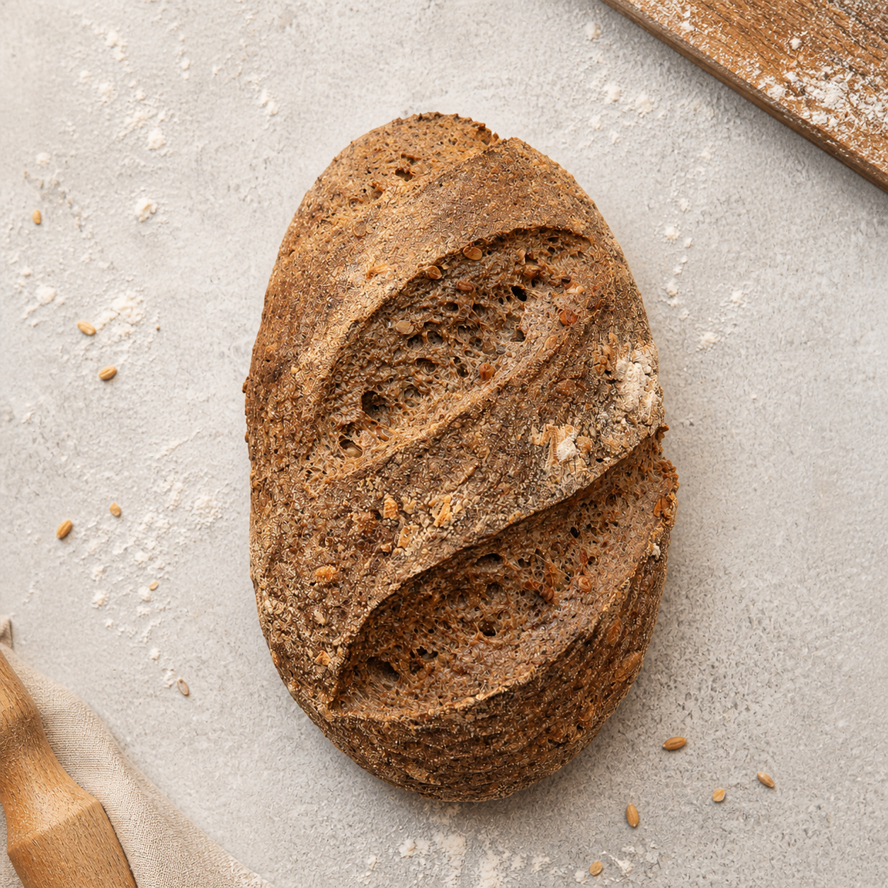
Pâine din hrișcă 500g
Pâine din hrișcă 500g
Ingrediente: făină de hrișcă (52.63%), maia cu făină de mei (19.13%), semințe de floarea soarelui (14.35), făină de cânepă (7.45%), tărâțe psyllium (4,30%), sare.
Declarație nutrițională: / 100g - Valoare nutrițională: 908,46KJ / 216,3kcal. Lipide 5,74g din care saturate 0,21g. Glucide 32,58g din care zaharuri 1,17g. Proteine 7,16g. Sare 0,98g.
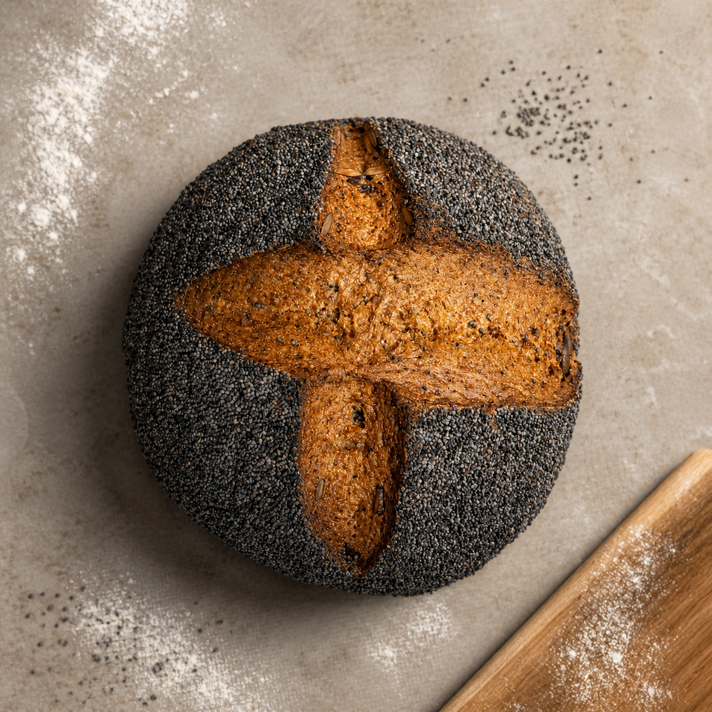
Pâine cu semințe din făinuri fără gluten 500g
Pâine cu semințe din făinuri fără gluten 500g
Ingrediente: făină de hrișcă bio (25,42%), maia din făină de hrișcă (12.71), amidon de cartof, făină de orez bio integral (4,23), făină de quinoa bio (4,23%), semințe de dovleac (4.23%), tărâțe psyllium, semințe de mac (1.72%), sare.
Declarație nutrițională: / 100g - Valoare nutrițională: 1012,83KJ / 241,15kcal. Lipide 3,44g din care saturate 0,66g. Glucide 43,76g din care zaharuri 1,24g. Proteine 7,25g. Sare 1,53g.
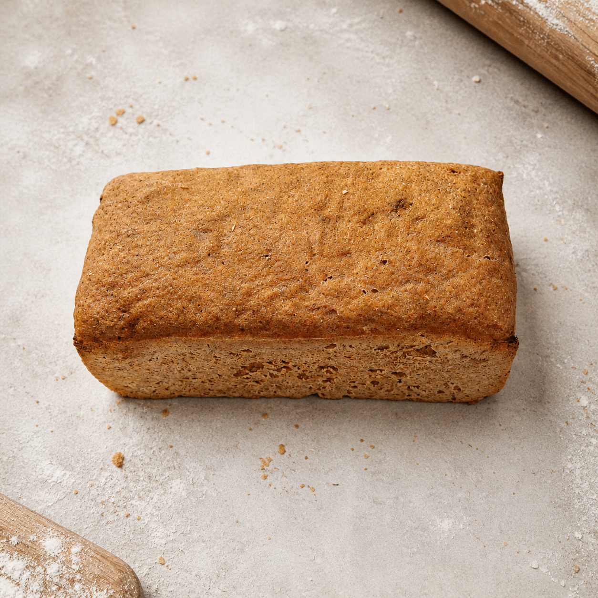
Pâine de sorg 700g
Pâine de sorg 700g
Ingrediente: făină de sorg bio (20%), amidon de cartofi (20%), făină de năut (2.5 %), maia din făină de mei (10%), tărâțe psyllium (2.5 %), sare, apă.
Declarație nutrițională:
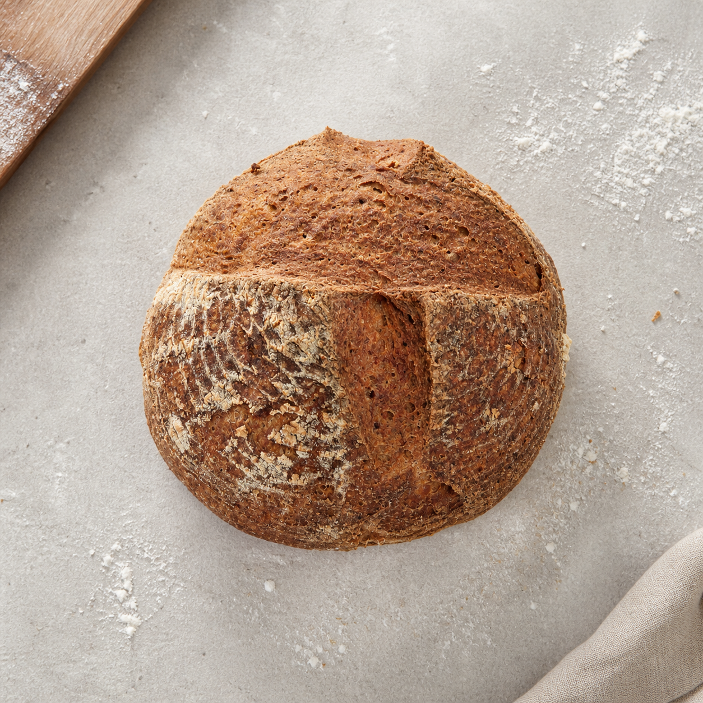
Delicioasa - pâine cu făină de ovăz și sorg 700g
Delicioasa - pâine cu făină de ovăz și sorg 700g
Ingrediente: amidon din cartofi, maia din făină de orez, făină de ovăz, făină de orez, tărâțe de psyllium, semințe de in măcinate, sare, apă.
Declarație nutrițională: / 100g - Valoare nutrițională: 209.5kcal. Lipide 3,1g. Glucide 38,16g. Proteine 4,8g. Fibre 5,95g. Sare 0,98g.
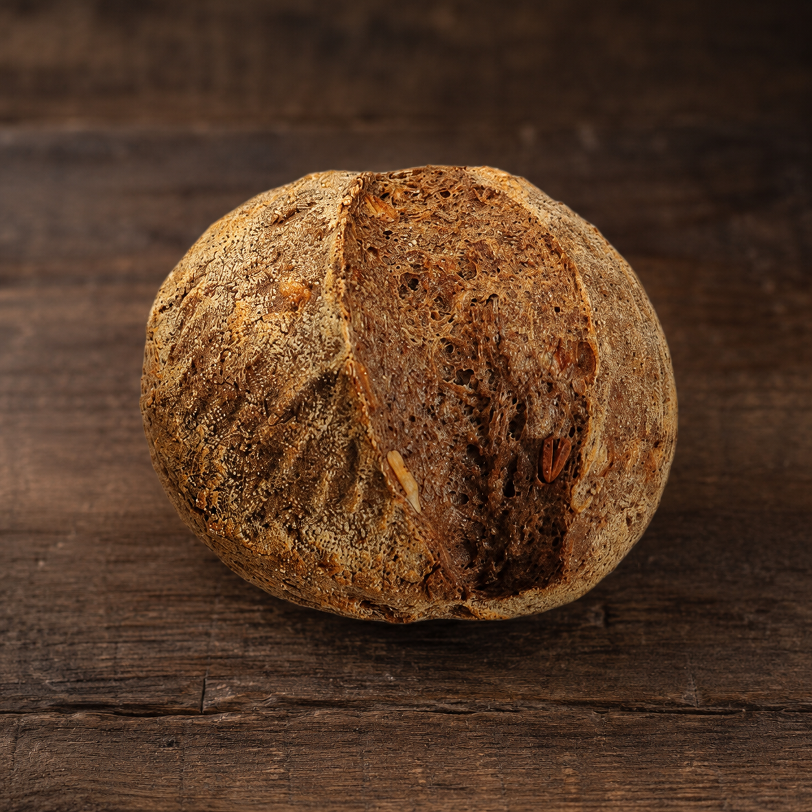
Chifle din hrișcă
Chifle din hrișcă
Ingrediente: făină de hrișcă (52.63%), maia cu făină de mei (19.13%), semințe de floarea soarelui (14.35%), făină de cânepă (7.45%), tărâțe psyllium (4,30%), sare.
Declarație nutrițională: / 100g - Valoarea nutrițională: 908,46KJ / 216,30 kcal. Lipide 5,74g din care saturate 0,21g. Glucide 32,58g din care zaharuri 1,17g. Proteine 7,16g. Sare 0,98g.
Patiserie
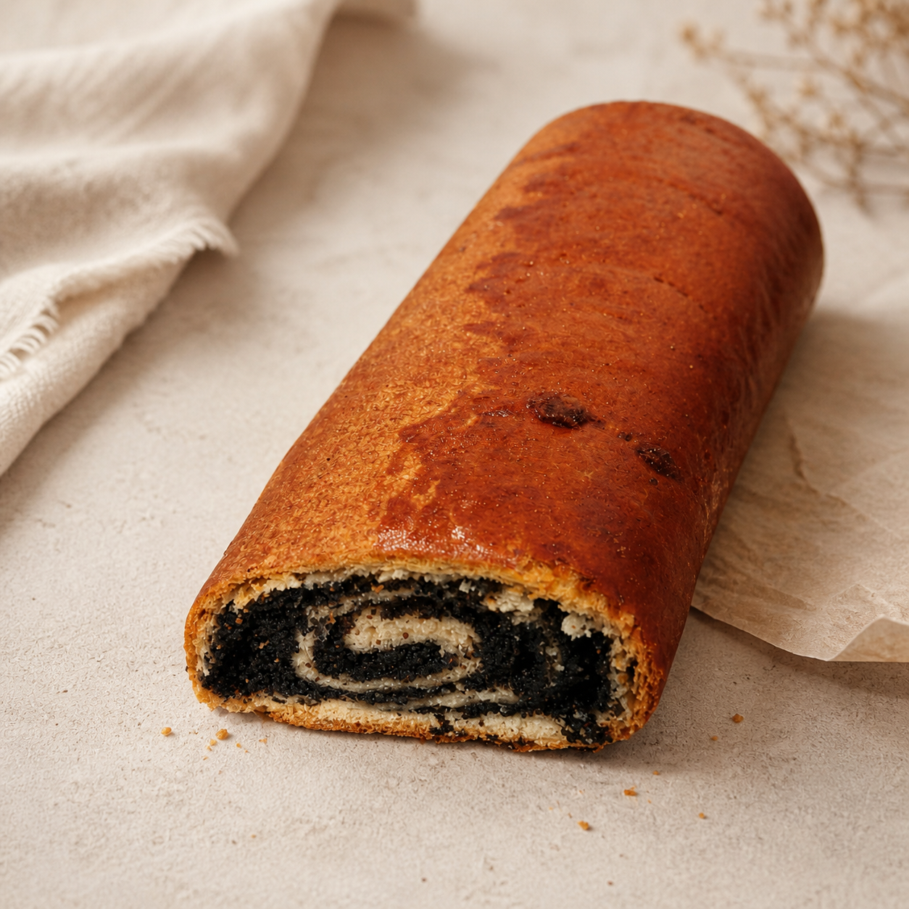
Baigli cu mac 500g
Baigli cu mac 500g
Ingrediente: făină de grâu, zahăr, ou, unt, mac (16,95%), apă, maia naturală de grâu, ulei, făină de secară, esență de lămâie, sare.
Declarație nutrițională: / 100g - Valoare nutrițională: 1556,86KJ / 370,68kcal. Lipide 16,69g din care saturate 4g. Glucide 43,87g din care zaharuri 22,42g. Proteine 8,68g. Sare 0,40g.
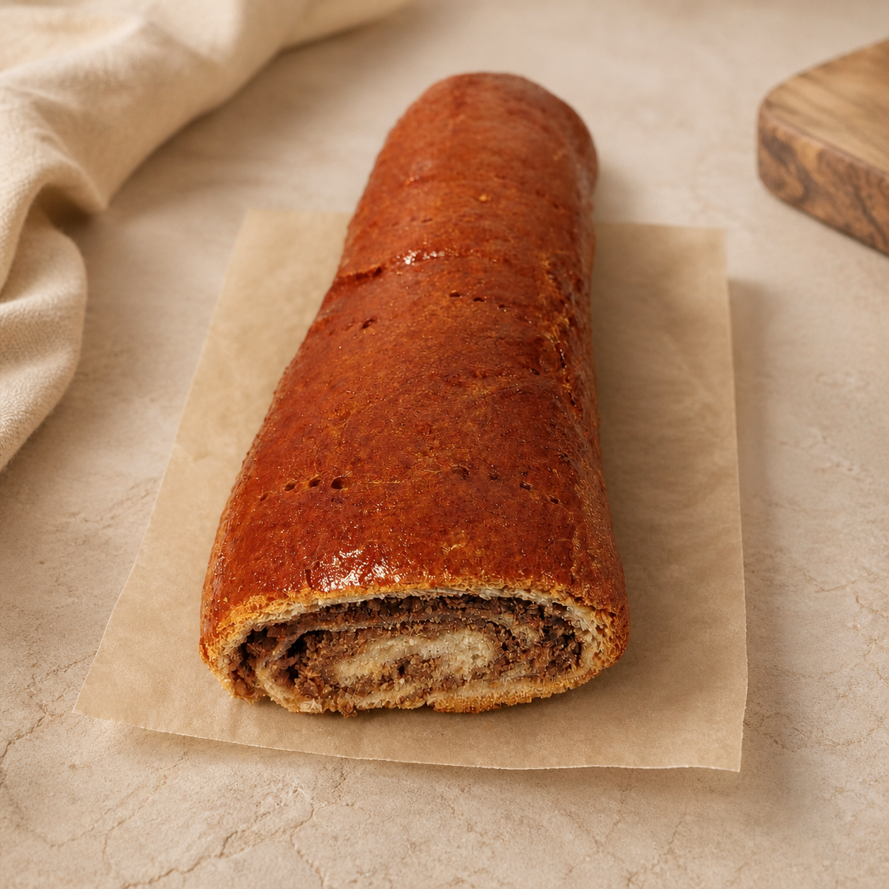
Baigli cu nucă 500g
Baigli cu nucă 500g
Ingrediente: făină de grâu, zahăr, nucă (23,44%), ou, unt, apă, maia naturală de grâu, ulei de floarea soarelui, făină de secară, sare.
Declarație nutrițională: / 100g - Valoare nutrițională: 1781,35KJ / 424,13kcal. Lipide 24,28g din care saturate 4,48g. Glucide 39,99g din care zaharuri 17,47g. Proteine 8,38g. Sare 0,37g.
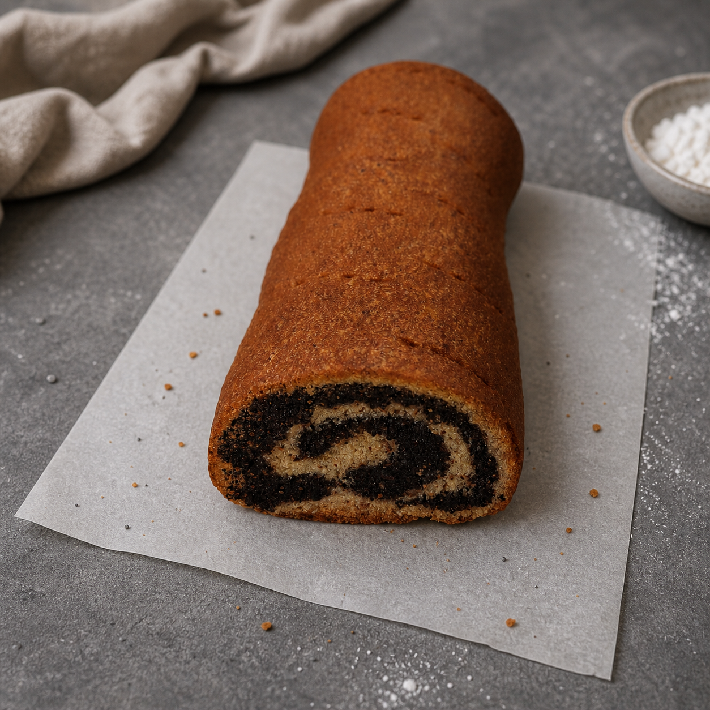
Baigli fără zahăr cu mac 500g
Baigli fără zahăr cu mac 500g
Ingrediente: făină albă de grâu, curmale, mac (29,17%), apă, ulei de floarea soarelui, maia naturală de grâu, miere, făină de secară, esență de portocale, sare.
Declarație nutrițională: / 100g - Valoare nutrițională: 1833,81KJ / 436,62kcal. Lipide 28,8g din care saturate 2,53g. Glucide 37,55g din care zaharuri 13,61g. Proteine 8,15g. Sare 0,84g.
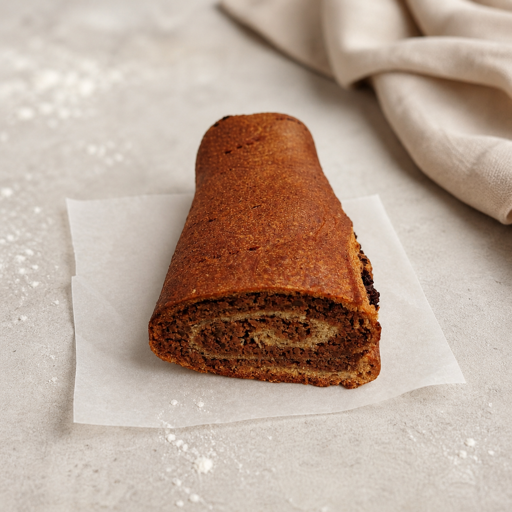
Baigli fără zahăr cu nucă 500g
Baigli fără zahăr cu nucă 500g
Ingrediente: făină albă de grâu, curmale, nucă (29,17%), apă, ulei de floarea soarelui, maia naturală de grâu, miere, făină de secară, sare.
Declarație nutrițională: / 100g - Valoare nutrițională: 1833,81KJ / 436,62kcal. Lipide 28,8g din care saturate 2,53g. Glucide 37,55g din care zaharuri 13,61g. Proteine 8,15g. Sare 0,84g.
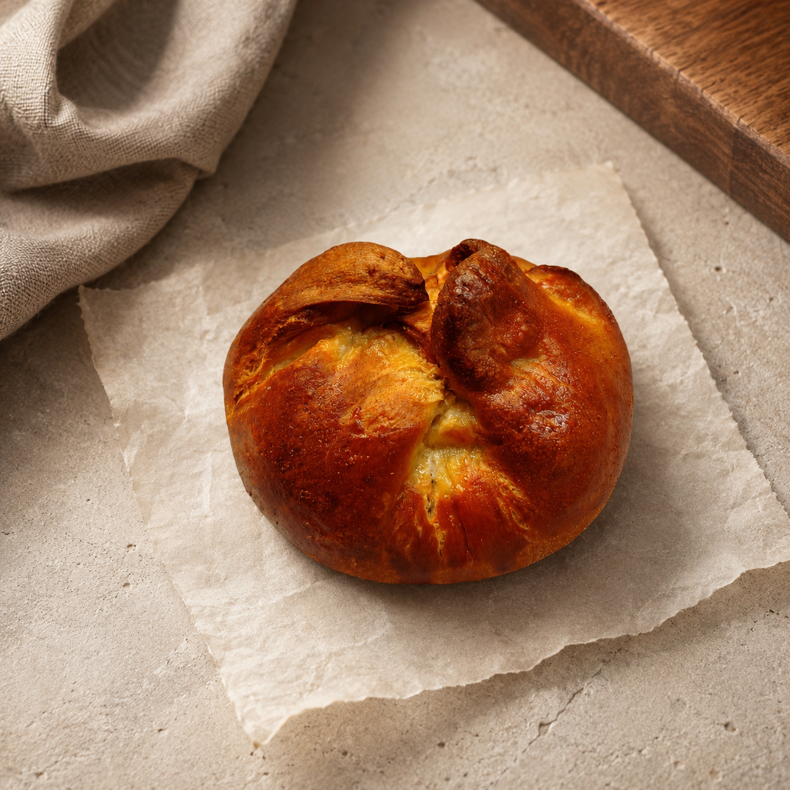
Brânzoaică 120g
Brânzoaică 120g
Ingrediente: făină de grâu, urdă (30%), zahăr, ou, unt, apă, merișoare, maia naturală de grâu, ulei de florea soarelui, făină de secară, sare.
Declarație nutrițională: / 100g - Valoare nutrițională: 1321,66KJ / 314,68kcal. Lipide 13,89g din care saturate 5,84g. Glucide 35,61g din care zaharuri 15,91g. Proteine 9,63g. Sare 0,36g.
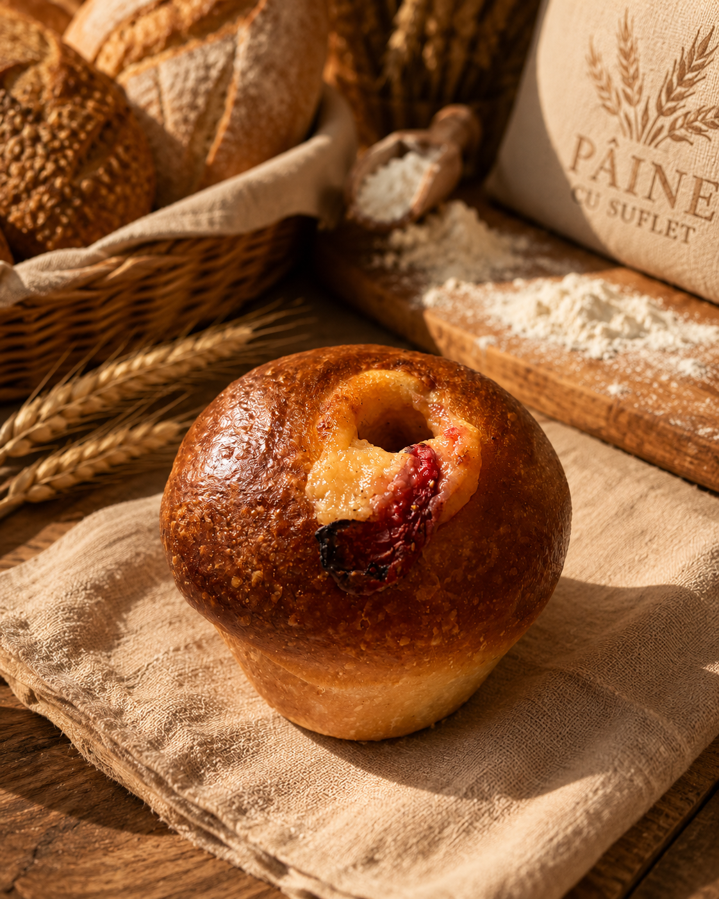
Brioșă cu vanilie
Brioșă cu vanilie
Ingrediente: cremă de vanilie (38,47%), făină albă de grâu, unt, apă, lapte, ouă, zahăr, ulei de floarea soarelui, amidon de cartof, făină de secară, vanilie bourbon, sare.
Declarație nutrițională: / 100g - Valoare nutrițională: 1590,92KJ / 378,79kcal. Lipide 14,20g din care saturate 5,21g. Glucide 53,04g din care zaharuri 14,35g. Proteine 7,13g. Sare 0,50g.
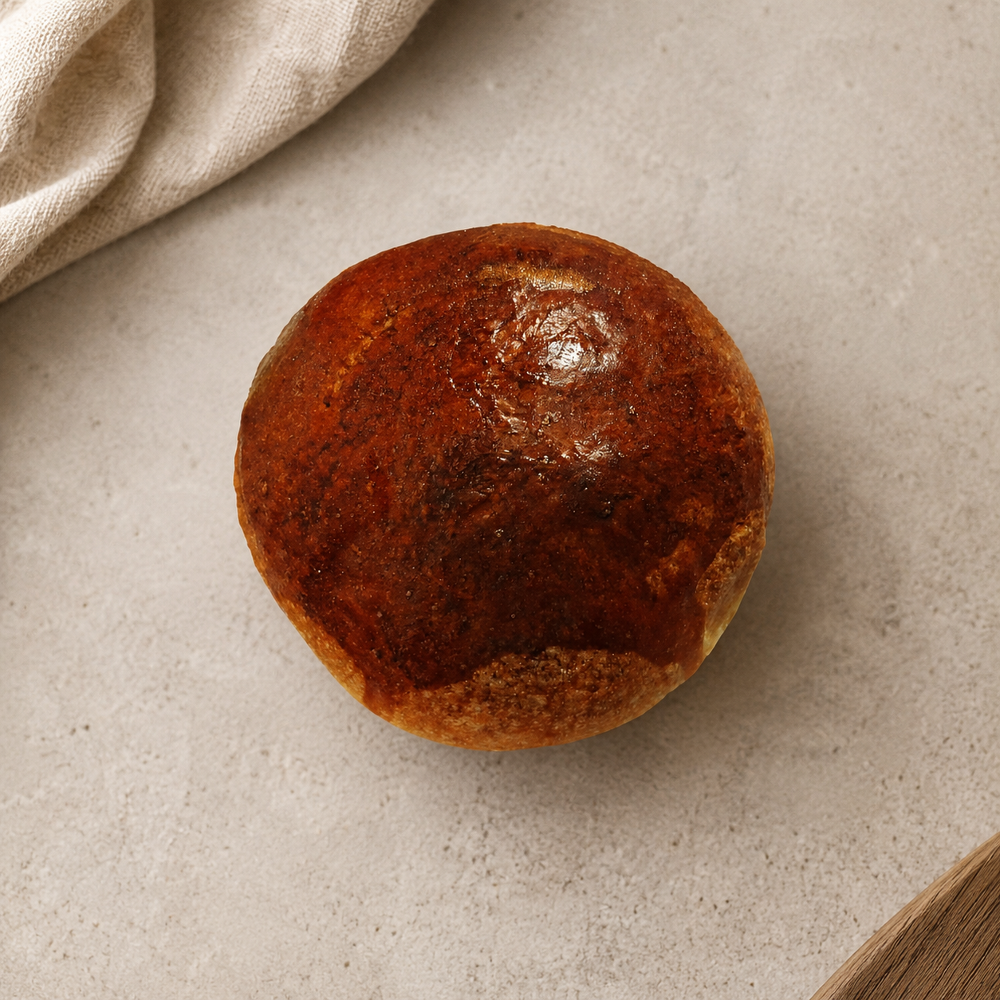
Chiflă burger
Chiflă burger
Ingrediente: făină albă de grâu, ou, unt, apă, zahăr, maia naturală de grâu, ulei de floarea soarelui, făină de secară, sare.
Declarație nutrițională: / 100g - Valoare nutrițională: 1782,06KJ / 424,30kcal. Lipide 17,40g din care saturate 4,64g. Glucide 58,68g din care zaharuri 11,60g. Proteine 8,34g. Sare 0,82g.
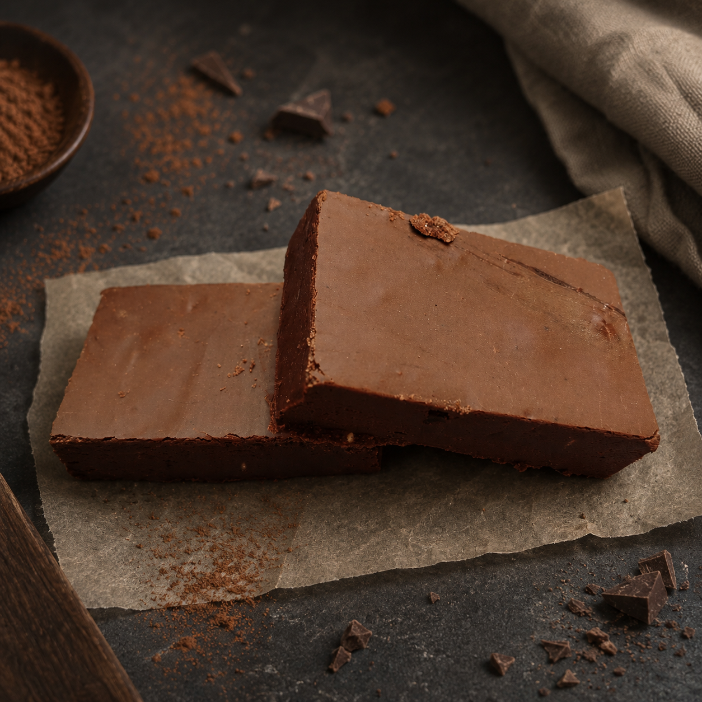
Ciocolată cu lapte
Ciocolată cu lapte
Ingrediente: zahăr, lapte praf, unt, lapte, cacao, vanilie bourbon, sare.
Declarație nutrițională: / 100g - Valoare nutrițională: 1923,98KJ / 458,09kcal. Lipide 25,37g din care saturate 13,10g. Glucide 45,39g din care zaharuri 45,39g. Proteine 8,79g. Sare 0,28g.
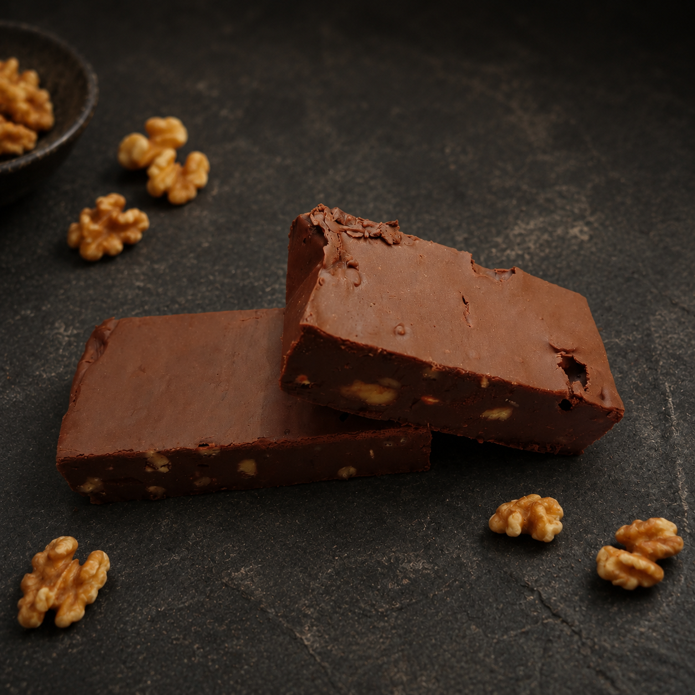
Ciocolată cu lapte și nucă
Ciocolată cu lapte și nucă
Ingrediente: zahăr, lapte praf, unt, nucă (9,98%), lapte, cacao, vanilie bourbon, sare.
Declarație nutrițională: / 100g - Valoare nutrițională: 2065,31KJ / 491,74kcal. Lipide 30.58g din care saturate 12,54g. Glucide 41,99g din care zaharuri 41,12g. Proteine 9,38g. Sare 0,25.
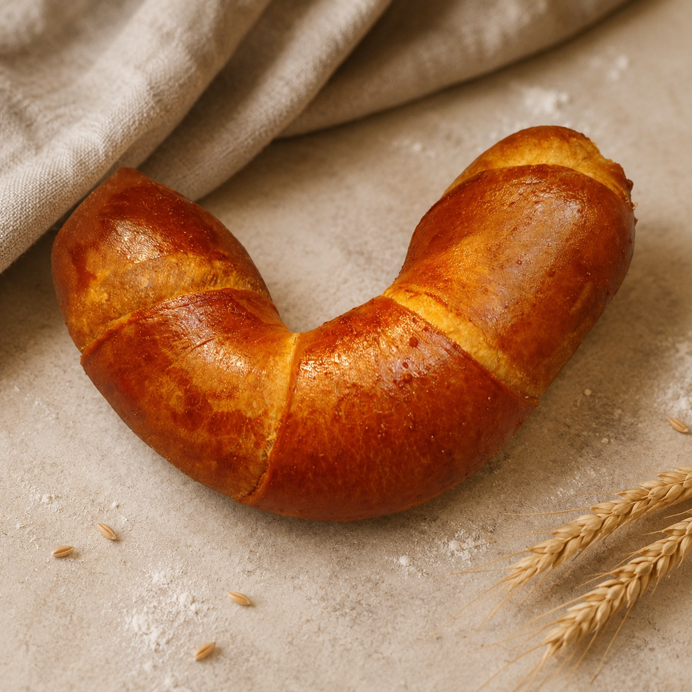
Corn cu ciocolată
Corn cu ciocolată
Ingrediente: făină albă de grâu, ciocolată cu lapte (21.05%), ou, unt, apă, zahăr, maia naturală de grâu, ulei de floarea soarelui, făină de secară, sare.
Declarație nutrițională: / 100g - Valoare nutrițională: 1898,15KJ / 451,94kcal. Lipide 18,03g din care saturate 4,44g. Glucide 62,17g din care zaharuri 24,83g. Proteine 7,16g. Sare 0,56g.
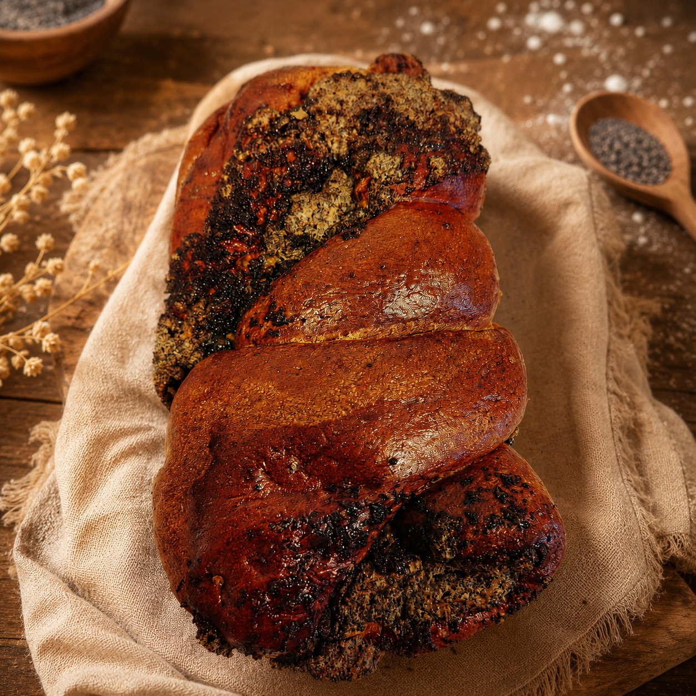
Cozonac cu mac 700g
Cozonac cu mac 700g
Ingrediente: făină de grâu bio tip 650, zahăr, ou, unt, lapte 3.5% grăsime, mac (16,95%), apă, maia naturală de grâu, făină de secară, vanilie de Madagascar, extract de lămâie, sare.
Declarație nutrițională: / 100g - Valoare nutrițională: 1556,86KJ / 370,68kcal. Lipide 16,69g din care saturate 4g. Glucide 43,87g din care zaharuri 22,42g. Proteine 8,68g. Sare 0,40g.
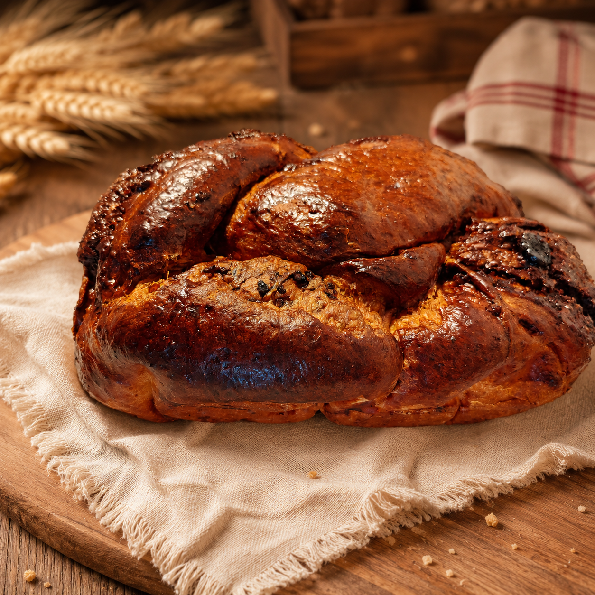
Cozonac cu nucă 700g
Cozonac cu nucă 700g
Ingrediente: făină de grâu bio tip 650, zahăr, nucă (23,44%), ou, unt, apă, maia naturală de grâu, lapte 3.5%, merișoare, cacao, făină de secară, vanilie de Madagascar, extract de lămâie, sare.
Declarație nutrițională: / 100g - Valoare nutrițională: 1781,35KJ / 424,13kcal. Lipide 24,28g din care saturate 4,48g. Glucide 39,99g din care zaharuri 17,47g. Proteine 8,38g. Sare 0,37g.
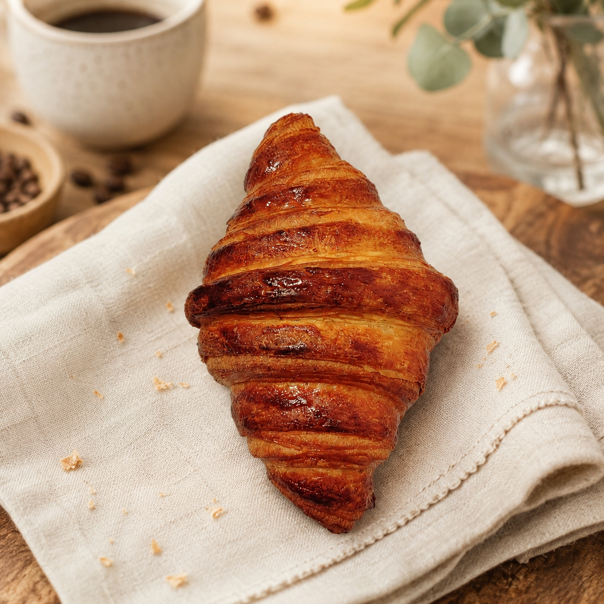
Croissant
Croissant
Ingrediente: făină de grâu tip 650, apă, unt, făină de grâu de tip 550, zahăr, făină de secară, ulei de floarea-soarelui, ouă, sare.
Declarație nutrițională: / 100g - Valoare nutrițională: 1633,17KJ / 389,78kcal. Lipide 23,23g din care saturate 14,29g. Glucide 39,58g din care zaharuri 6,09g. Proteine 4,89g. Sare 0,69g.
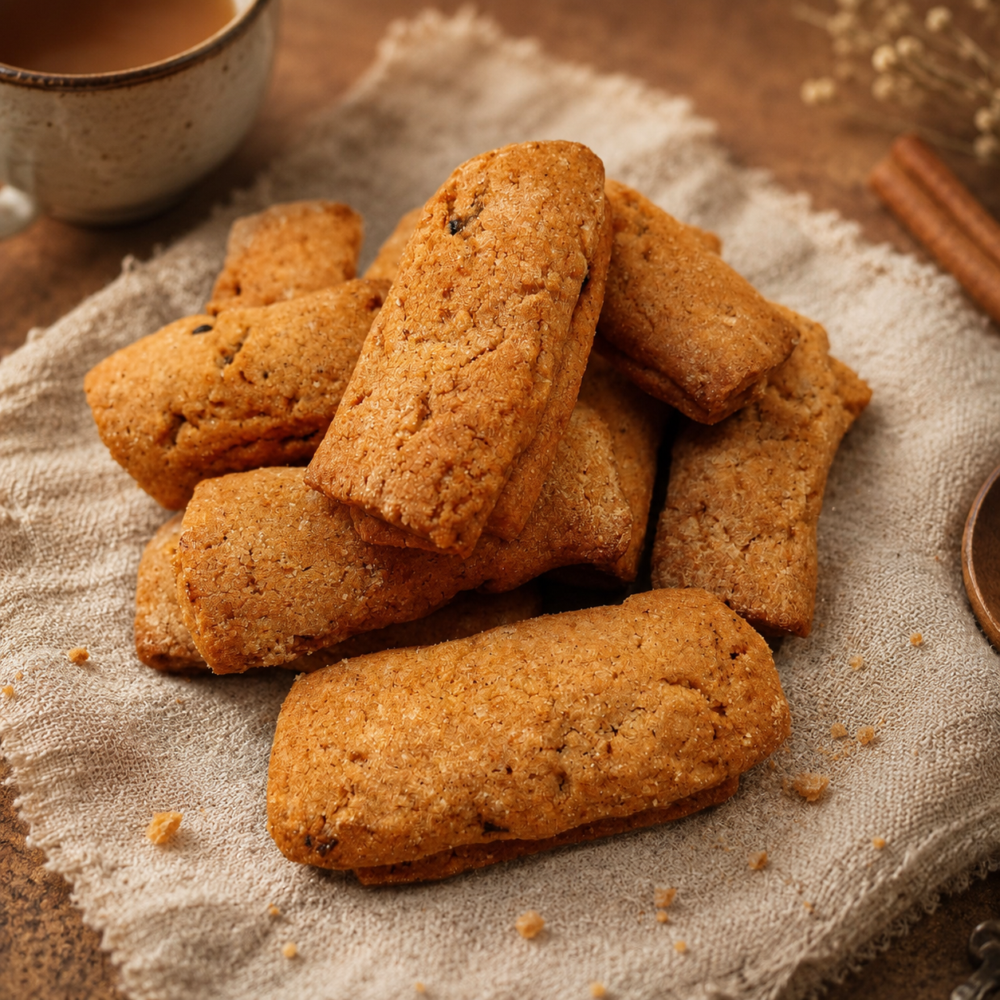
Fursecuri cu nucă
Fursecuri cu nucă
Ingrediente: făină de grâu, magiun de prune, unt, nucă, zahăr (14,16%), ou, vanilie bourbon, sare, praf de copt.
Declarație nutrițională: / 100g - Valoare nutrițională: 1870,85KJ / 445,44kcal. Lipide 22,10g din care saturate 6,20g. Glucide 50,97g din care zaharuri 28,16g. Proteine 6,63g. Sare 0,36g.
Fursecuri cu nucă fără zahăr
Fursecuri cu nucă fără zahăr
Ingrediente: făină de grâu, magiun de prune, curmale, unt, nucă, ou, praf de copt, sare.
Declarație nutrițională: / 100g - Valoare nutrițională: 1681,22KJ / 400,29cal. Lipide 20,68g din care saturate 5,38g. Glucide 43,85g din care zaharuri 22,69g. Proteine 6,87g. Sare 0,87g.
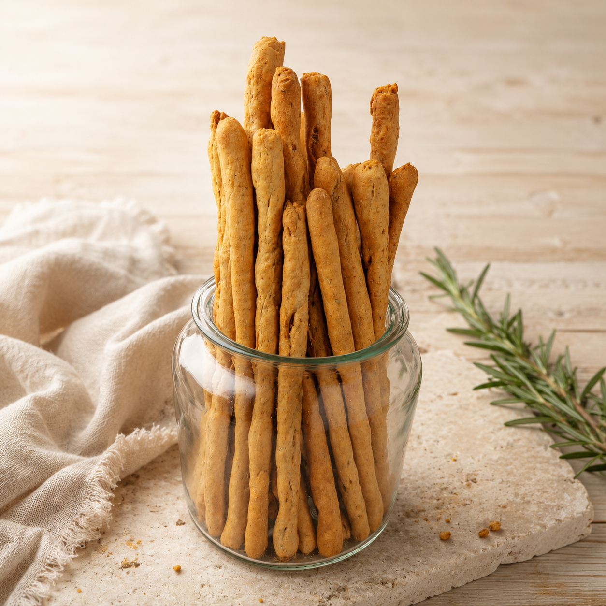
Grisine
Grisine
Ingrediente: făină albă de grâu, maia din făină de grâu, făină integral de grâu, apă, ulei de măsline, sare, rozmarin.
Declarație nutrițională: / 100g - Valoare nutrițională: 1264,75KJ / 301,13kcal. Lipide 7,84g din care saturate 1,15g. Glucide 47,565g din care zaharuri 0,47g. Proteine 8,01g. Sare 1,34g.
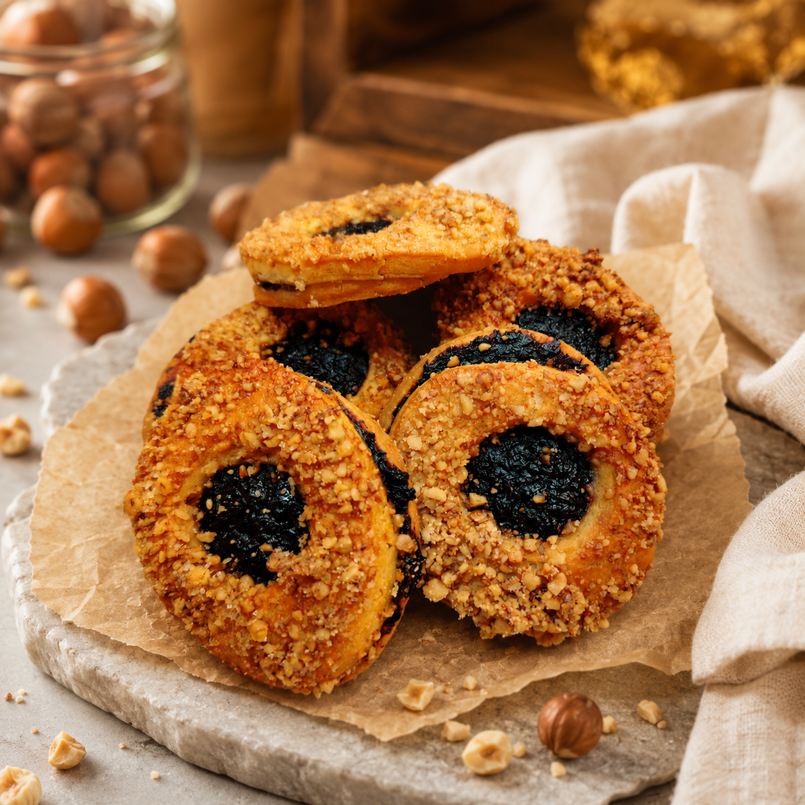
Linzer
Linzer
Ingrediente: făină de grâu, magiun de prune, unt, smântână, zahăr, ou, praf de copt, vanilie bourbon, esență de lămâie, nucă.
Declarație nutrițională: / 100g - Valoare nutrițională: 2318,07KJ / 551,92kcal. Lipide 23,78g din care saturate 12,04g. Glucide 73,95g din care zaharuri 41,90g. Proteine 6,72g. Sare 0g.
Mălai
Mălai
Ingrediente: iaurt, griș, făină de mălai, ouă, ulei de floarea soarelui, făină de grâu, zahăr, praf de copt, extract de lămâie, sare.
Declarație nutrițională: / 100g - Valoare nutrițională: 1258,11KJ / 299,55kcal. Lipide 10,58g din care saturate 1,33g. Glucide 43,67g din care zaharuri 15,48g. Proteine 5,39g. Sare 0,85g.
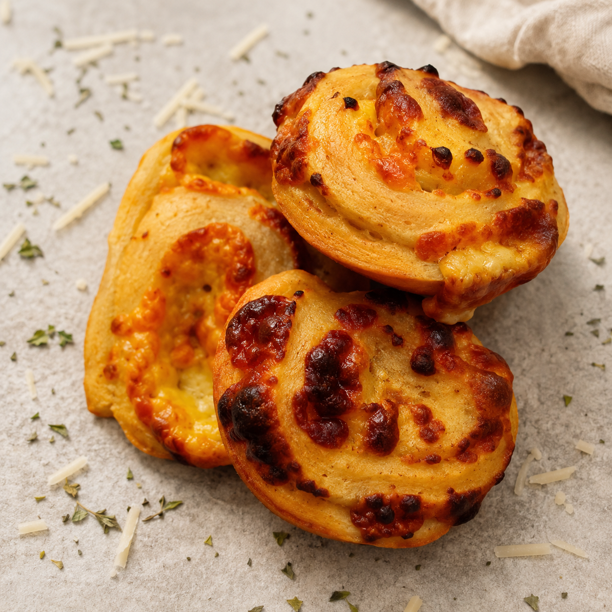
Melci cu brânză de burduf și ceapă
Melci cu brânză de burduf și ceapă
Ingrediente: brânză de burduf (27,78%), făină de grâu, ceapă rosie (9,26%), ouă, unt, apă, zahăr, ulei, făină de secară, sare.
Declarație nutrițională: / 100g - Valoare nutrițională: 1375,97KJ / 327,61kcal. Lipide 16,52g din care saturate 7,29g. Glucide 32,28g din care zaharuri 6,45g. Proteine 10,15g. Sare 1g.
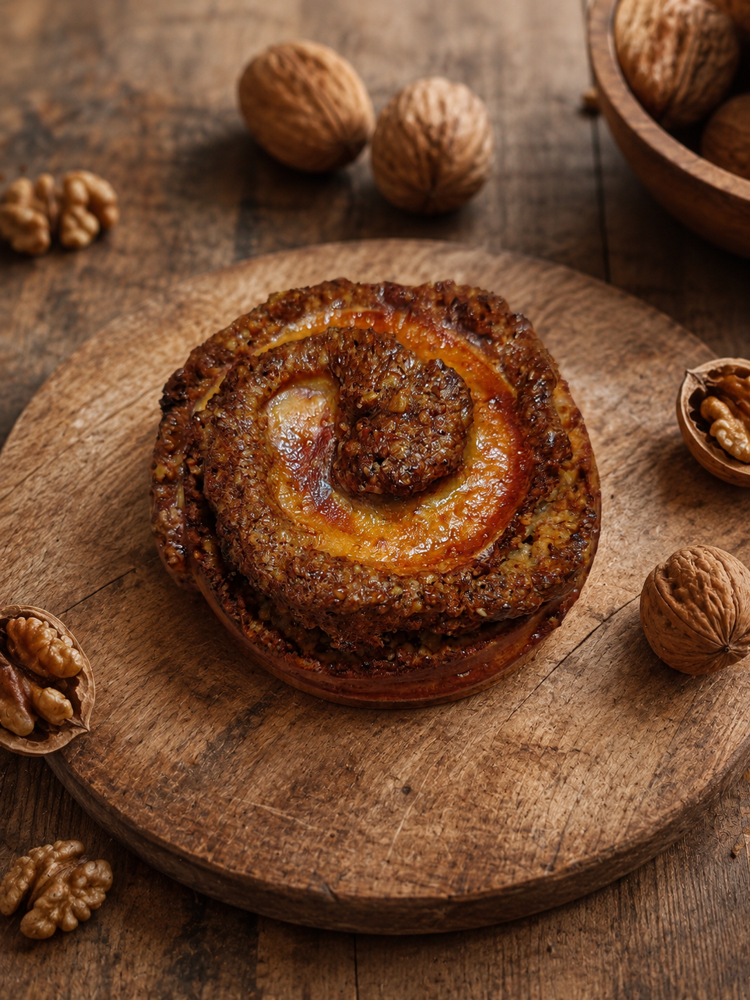
Melci cu nucă
Melci cu nucă
Ingrediente: făină albă de grâu, nucă (20,41%), curmale, ulei de floarea soarelui, maia din făiă de grâu, miere, făină de secară, sare.
Declarație nutrițională: / 100g - Valoare nutrițională: 1621,24KJ / 386,01kcal. Lipide 22,13g din care saturate 1,62g. Glucide 36,48g din care zaharuri 9,90g. Proteine 7,47g. Sare 0,68g.
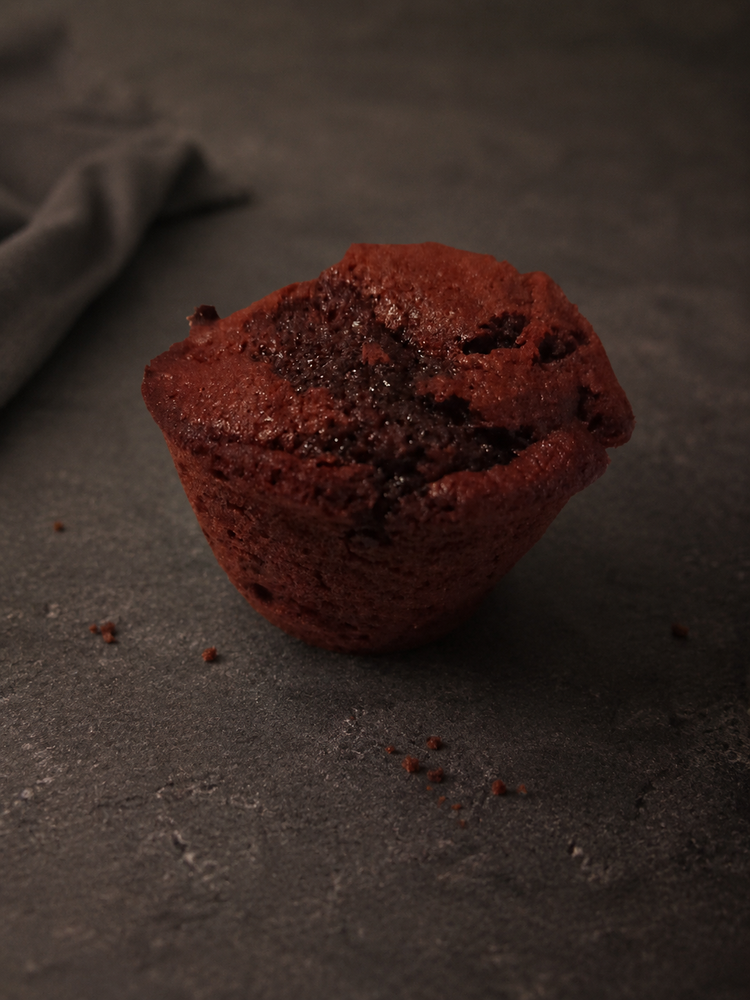
Mini-chec
Mini-chec
Ingrediente: maia cu făină de grâu, ciocolată neagră, ciocolată cu lapte, unt, zahăr, ou, sare, praf de copt.
Declarație nutrițională: / 100g - Valoare nutrițională: 1532,58KJ / 364,90kcal. Lipide 24,40g din care saturate 12,02g. Glucide 29,51g din care zaharuri 19,81g. Proteine 4,14g. Sare 1,64g.
Pandișpan
Pandișpan
Ingrediente: ou, merișoare, zahăr, făină albă de grâu, ulei, praf de copt, esență de vanilie.
Declarație nutrițională: / 100g - Valoare nutrițională: 1169,66KJ / 278,49kcal. Lipide 7,09g din care saturate 1,36g. Glucide 45,60g din care zaharuri 1,36g. Proteine 6,74g. Sare 0g.
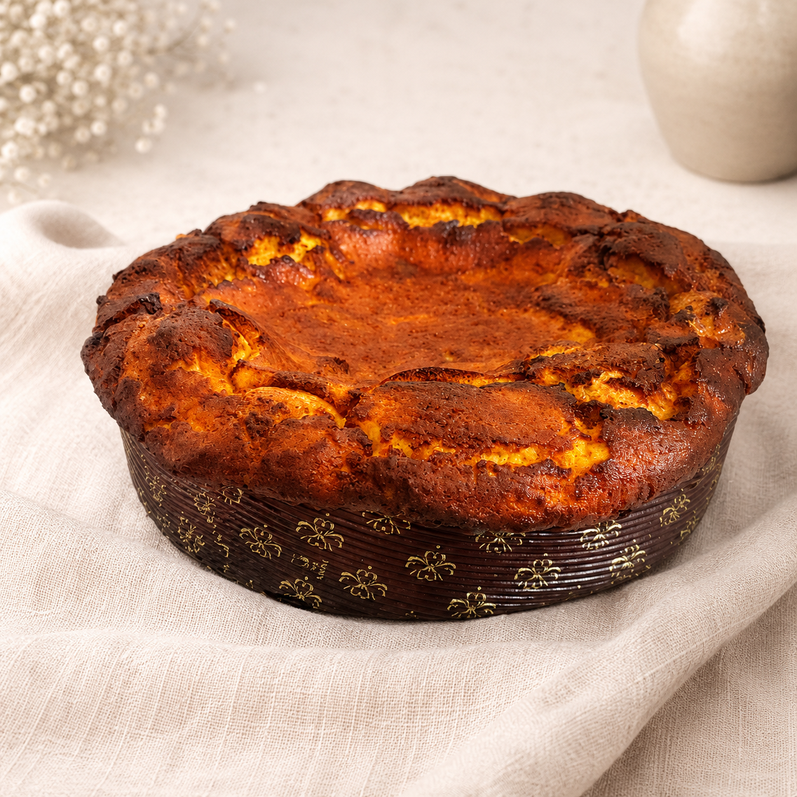
Pască
Pască
Ingrediente: făină de grâu, urda (30%), zahăr, ou, unt, gris, apă, stafide, maia naturală de grâu, ulei de florea soarelui, făină de secară, vanilie bourbon, smântână, esență de portocale, sare.
Declarație nutrițională: / 100g - Valoare nutrițională: 1321,66KJ / 314,68kcal. Lipide 13,89g din care saturate 5,84g. Glucide 35,61g din care zaharuri 15,91g. Proteine 9,63g. Sare 0,36g.
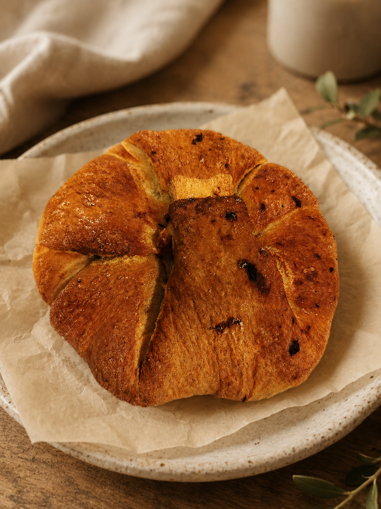
Plăcintă cu varză
Plăcintă cu varză
Ingrediente: varză (44,45%), făină albă de grâu, apă, curmale, ulei de floarea soarelui, maia de făină de grâu, făină de secară, sare, piper negru.
Declarație nutrițională: / 100g - Valoare nutrițională: 805,61KJ / 191,81kcal. Lipide 6,66g din care saturate 0,72g. Glucide 27,94g din care zaharuri 6,40g. Proteine 3,87g. Sare 0,84g.
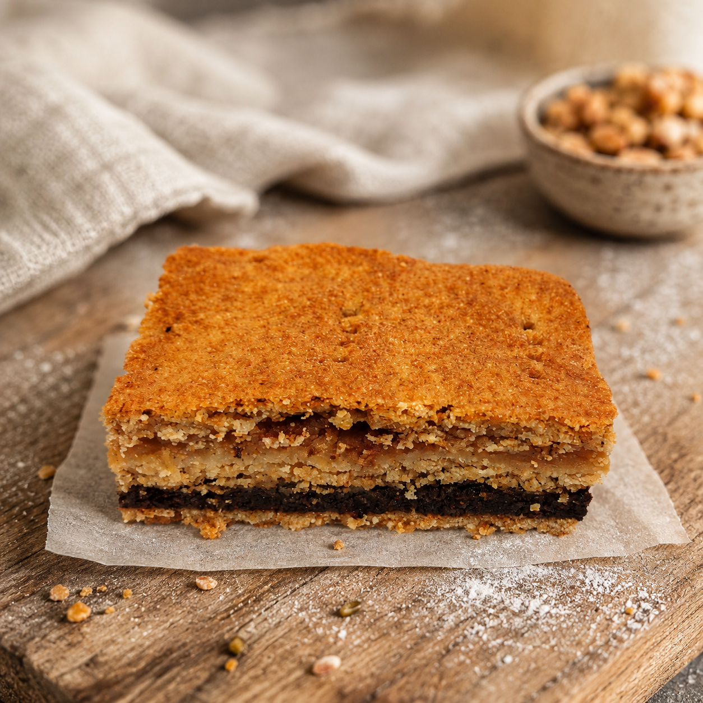
Prăjitură cu măr, magiun și nucă
Prăjitură cu măr, magiun și nucă
Ingrediente: mere (34,19%), făină integrală de grâu, magiun de prune (10,26%), zahăr, nucă (8,55%), ulei, apă, praf de copt, esență de portocale, gris, scorțișoară, sare.
Declarație nutrițională: / 100g - Valoare nutrițională: 1693,74KJ / 405,27kcal. Lipide 13,84g din care saturate 1,55g. Glucide 62,15g din care zaharuri 38,66g. Proteine 4,81g. Sare 0,17g.
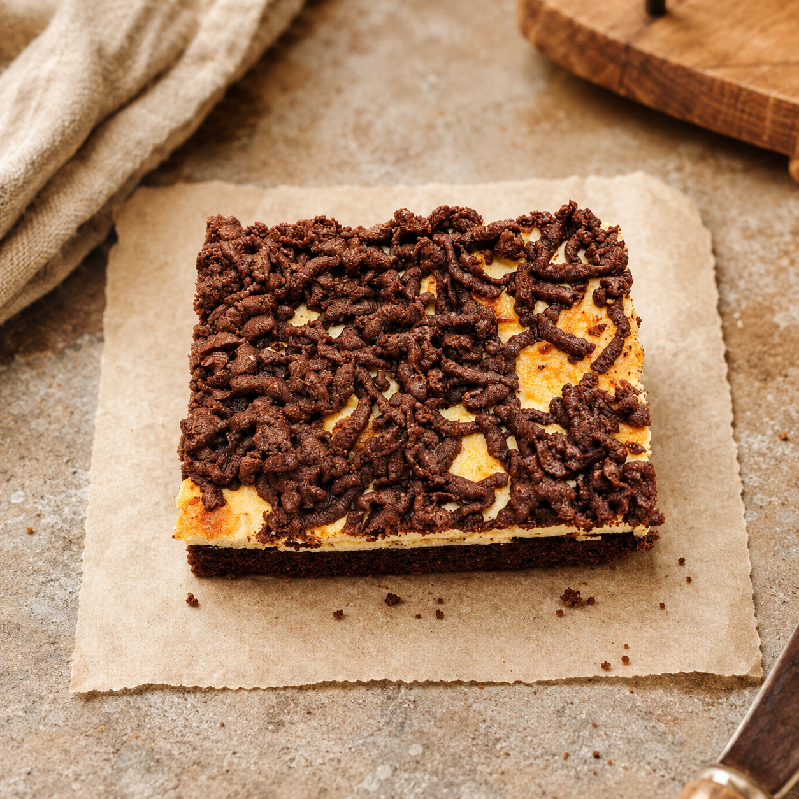
Prăjitură Rudy
Prăjitură Rudy
Ingrediente: brânză dulce de vacă, zahăr, ouă, esență de lămâie, vanilie bourbon, gris, făină albă de grâu, unt, cacao, praf de copt, sare, fructe de sezon.
Declarație nutrițională:
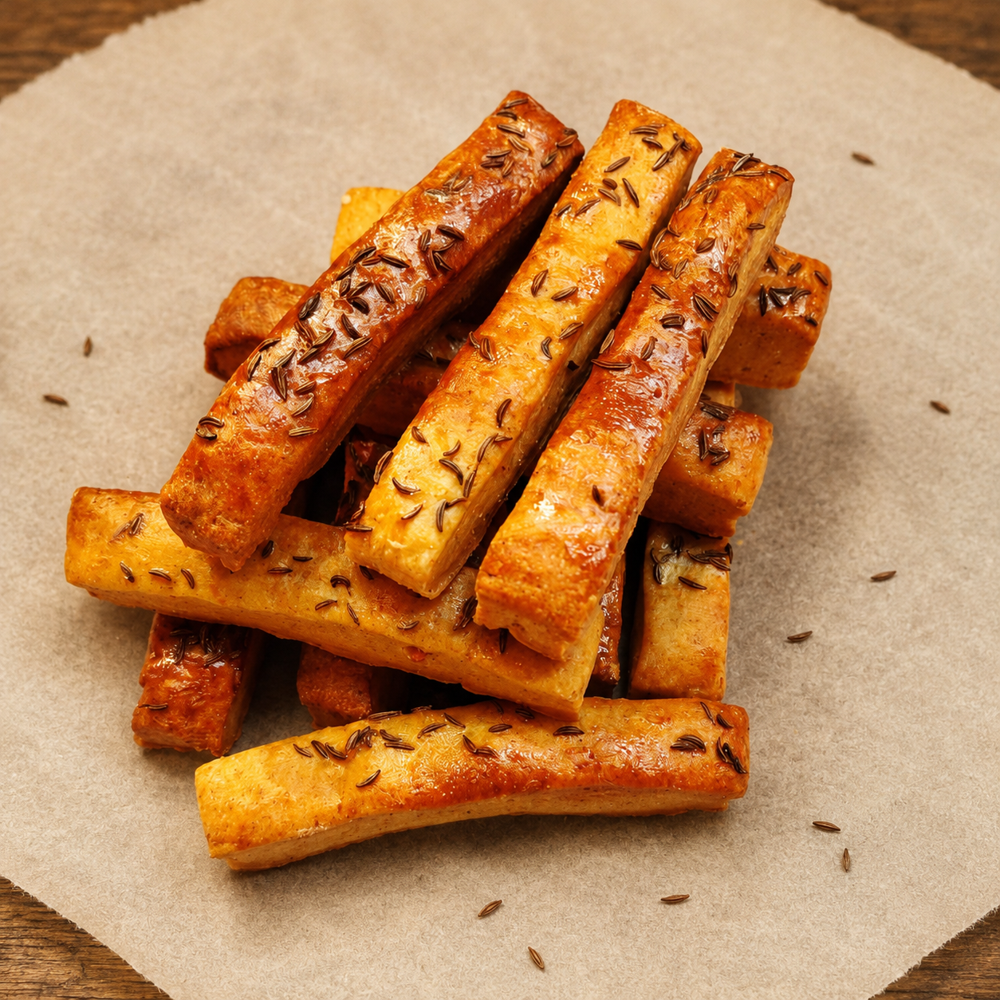
Sărățele cu telemea de oaie
Sărățele cu telemea de oaie
Ingrediente: făină albă de grâu, telemea de oaie (26,58%), maia de făină de grâu, unt, ou, sare, făină integrală de secară, apă, semințe de susan/chimen.
Declarație nutrițională: / 100g - Valoarea nutrițională: 1224,39KJ / 291,39kcal. Lipide 12,30g din care saturate 5,82g. Glucide 35,44g din care zaharuri 0,36g. Proteine 7,76g. Sare 1,29g.
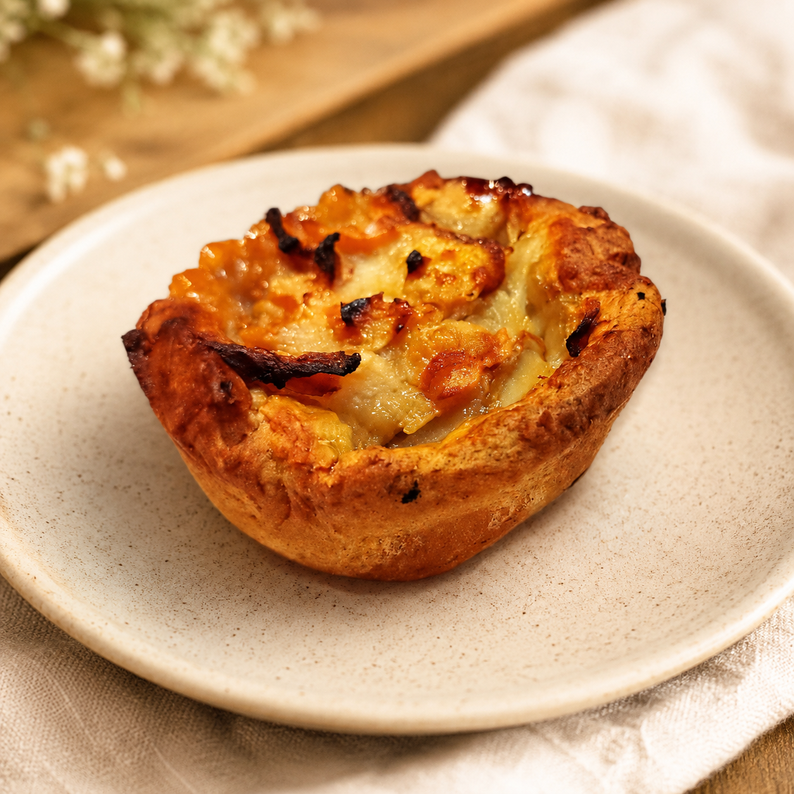
Tartă cu fructe fără zahăr
Tartă cu fructe fără zahăr
Ingrediente: fructe de sezon (38,47%), făină alba de grâu, apă, curmale, maia din făină de grâu, ulei, făină de secară, sare, conține urme de scorțișoară (0.05%) si amidon de cartofi.
Declarație nutrițională: / 100g - Valoarea nutrițională: 899,94KJ / 214,27kcal. Lipide 6,84g din care saturate 0,71g. Glucide 33,16g din care zaharuri 12,09g. Proteine 3,61g. Sare 0,41g.
Patiserie din făinuri fără gluten
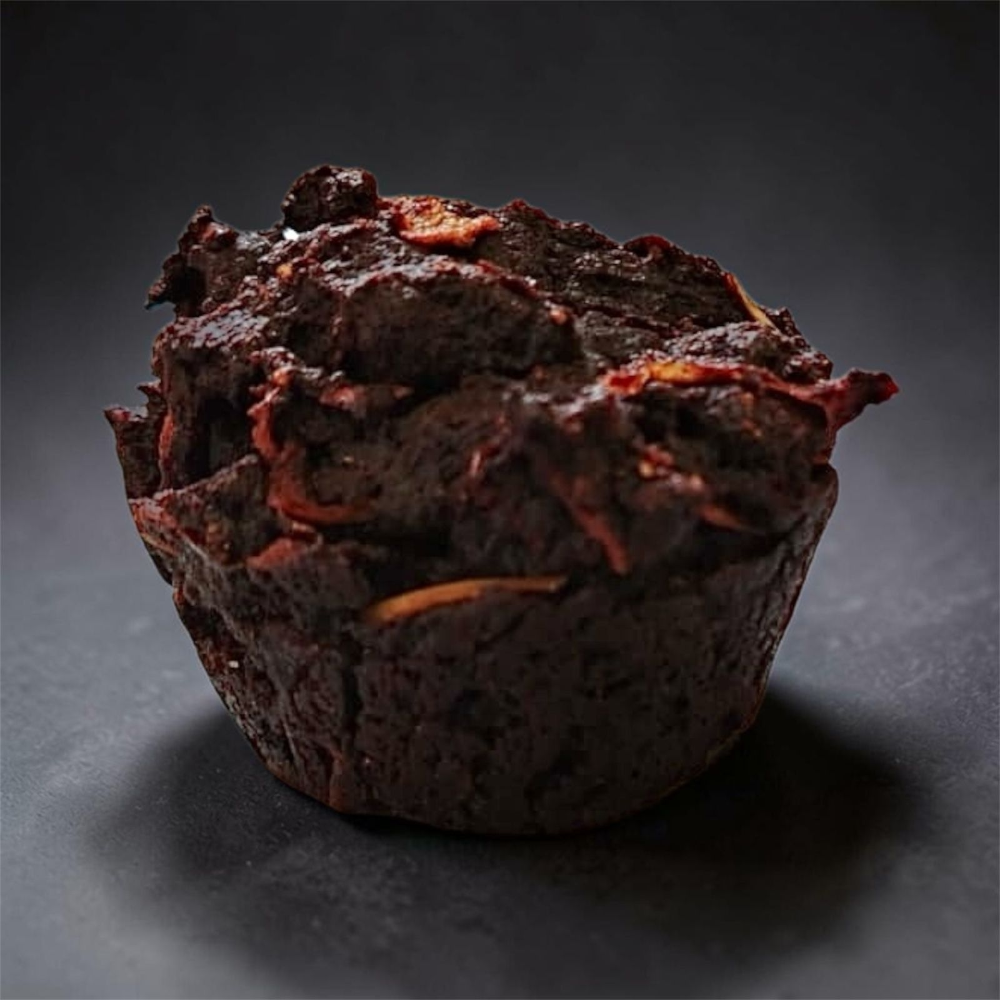
Brioșă vegană cu fructe
Brioșă vegană cu fructe
Ingrediente: fructe de sezon, miere, maia din făină de mei, apă, unt de cocos, cacao, făină de in, tărâțe psyllium, praf de copt, sare.
Declarație nutrițională: / 100g - Valoarea nutrițională: 1062,39KJ / 252,95kcal. Lipide 11,52g din care saturate 7,15g. Glucide 30,22g din care zaharuri 20g. Proteine 5,34g. Sare 0,80g.
Cookies
Cookies
Ingrediente: ciocolată neagră, zahăr Muscovado, ou, fulgi de cocos, unt, esență de vanilie, praf de copt, sare.
Declarație nutrițională: / 100g - Valoare nutrițională: 1650,86KJ / 393,06kcal. Lipide 14,55g din care saturate 7,04g. Glucide 59,53g din care zaharuri 14,55g. Proteine 3,53g. Sare 0,05.
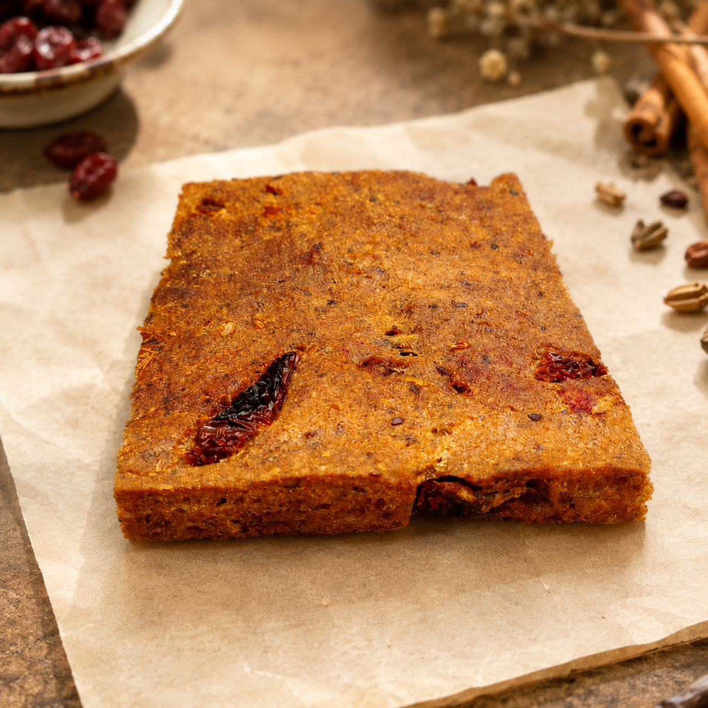
Foccacia cu legume
Foccacia cu legume
Ingrediente: amidon din cartof (43,1%), maia din făină de mei (17,24%), făină de sorg (17,24%), făină de naut (8,62%), apa, psyllium (3,44%), legume (11,8%), ulei de măsline, sare, piper.
Declarație nutrițională: / 100g - Valoarea nutrițională: 855,92KJ / 203,79kcal. Lipide 2,89g din care saturate 0,44g. Glucide 40,42g din care zaharuri 3,26g. Proteine 2,81g. Sare 1,17g.
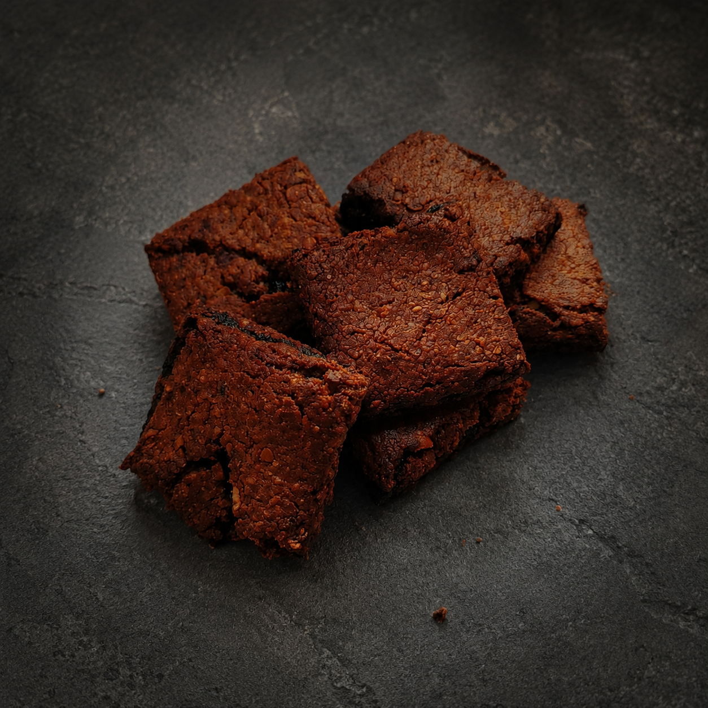
Fursecuri din făină de ovăz
Fursecuri din făină de ovăz
Ingrediente: făină de ovăz, magiun de prune, curmale, miez de nucă, ulei de măsline, tărâțe psyllium, praf de copt, sare.
Declarație nutrițională: / 100g - Valoarea nutrițională: 2500,81KJ / 595,43kcal. Lipide 33,30g din care saturate 4,25g. Glucide 59,65g din care zaharuri 30,91g. Proteine 10,04g. Sare 1,02g.
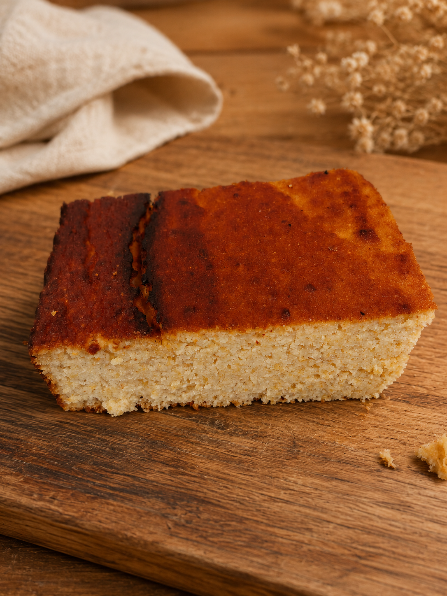
Prăjitură Ana
Prăjitură Ana
Ingrediente: brânză dulce de vacă, iaurt, mere, făină de mălai, făină de orez, făină de migdale, praf de copt, ouă, sare, zahăr de mesteacăn, esență de vanilie.
Declarație nutrițională:
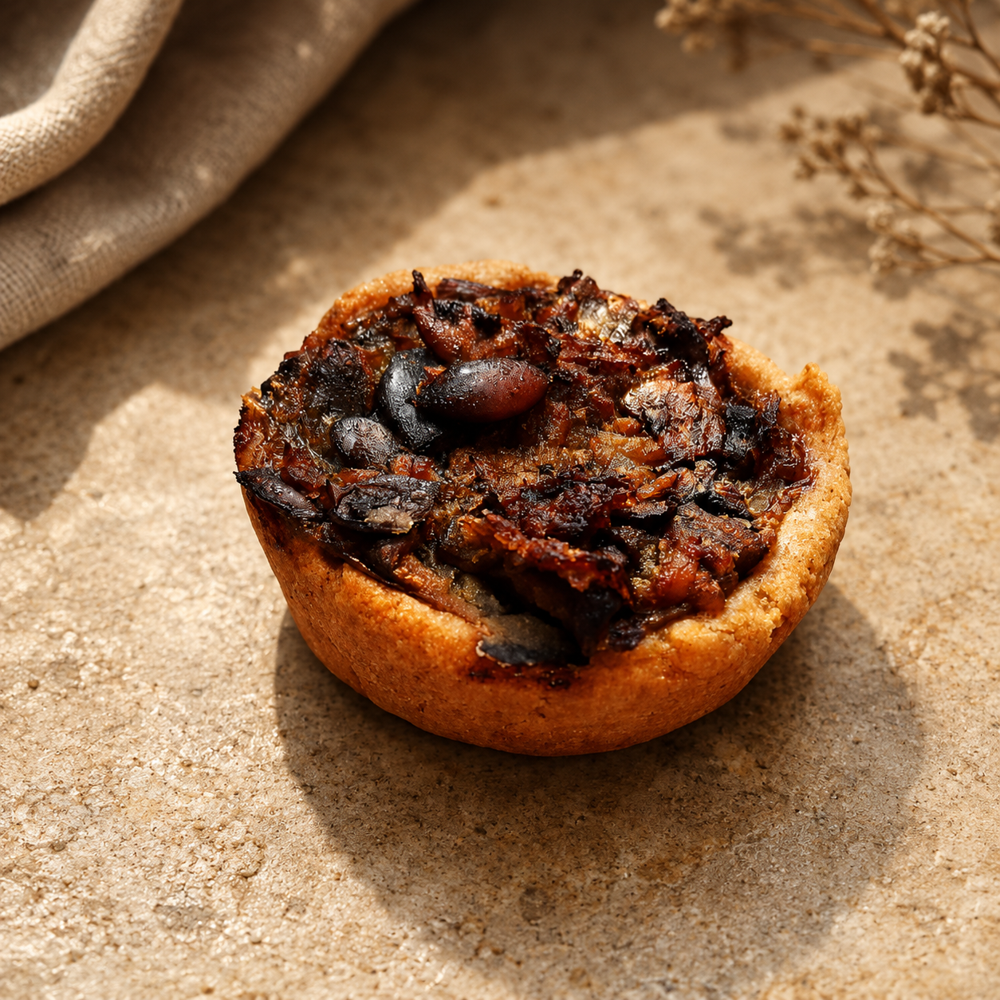
Tartă cu ciuperci, ceapă și cartofi
Tartă cu ciuperci, ceapă și cartofi
Ingrediente: apă, ciuperci champignon (14%) ceapă rosie(13%), cartofi (11%), făină de orez, ulei de cocos, făină de sorg, făină de migdale, amidon de cartofi, ulei de măsline, semințe de dovleac, tărâțe psyllium, sare, cimbrișor, făină de in, piper negru.
Declarație nutrițională: / 100g - Valoarea nutrițională: 1138,81kJ / 271,79 kcal. Lipide 17,38g din care saturate 8,48g. Glucide 25,14g din care zaharuri 4,86g. Proteine 2,82g. Sare 0,62g.
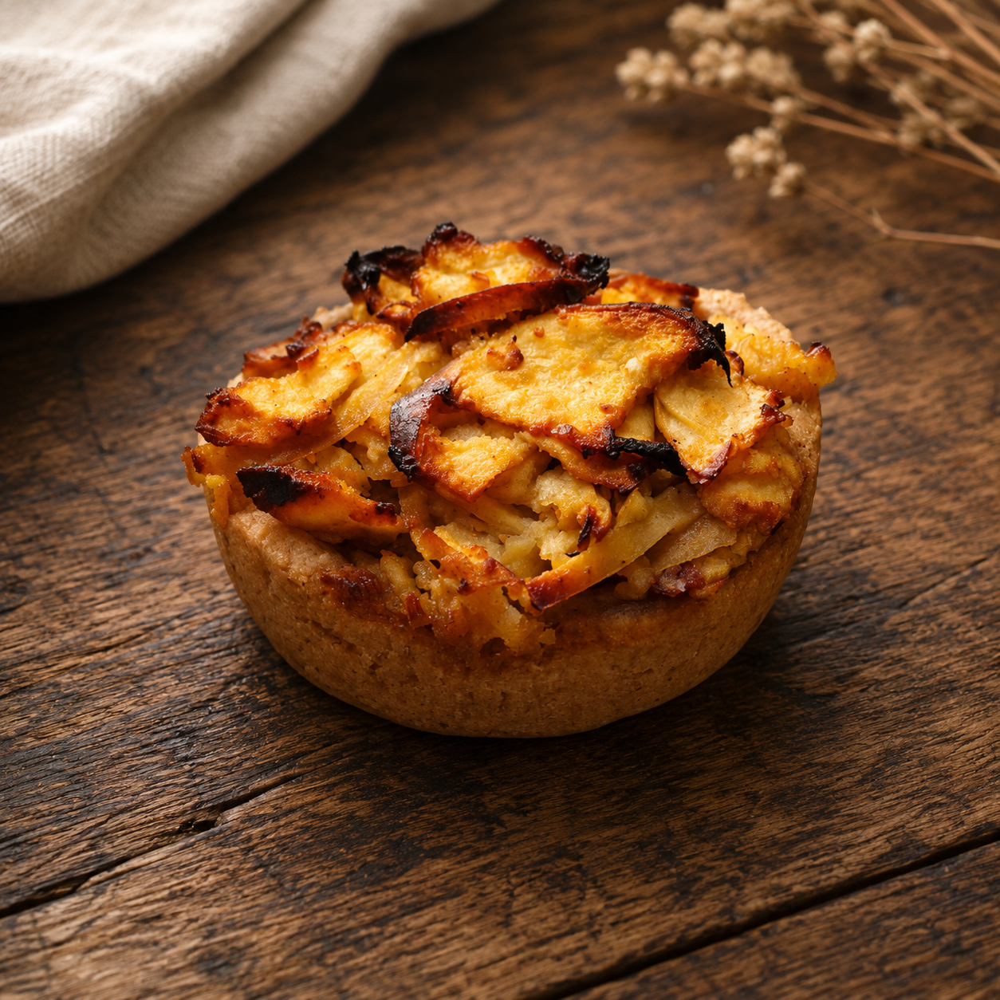
Tartă cu mere și cremă de migdale
Tartă cu mere și cremă de migdale
Ingrediente: apă, făină de migdale (14%), zahăr de mesteacăn, făină de orez, ulei de cocos, făină de sorg, ulei de măsline, curmale, mere (2.7%), faina de in, amidon de cartofi, tarate psyllium, sare.
Declarație nutrițională: / 100g - Valoare nutrițională: 1642,08KJ / 391,91kcal. Lipide 27,63g din care saturate 12,79g. Glucide 32,99g din care zaharuri 2,42g. Proteine 1,77g. Sare 1,17g.
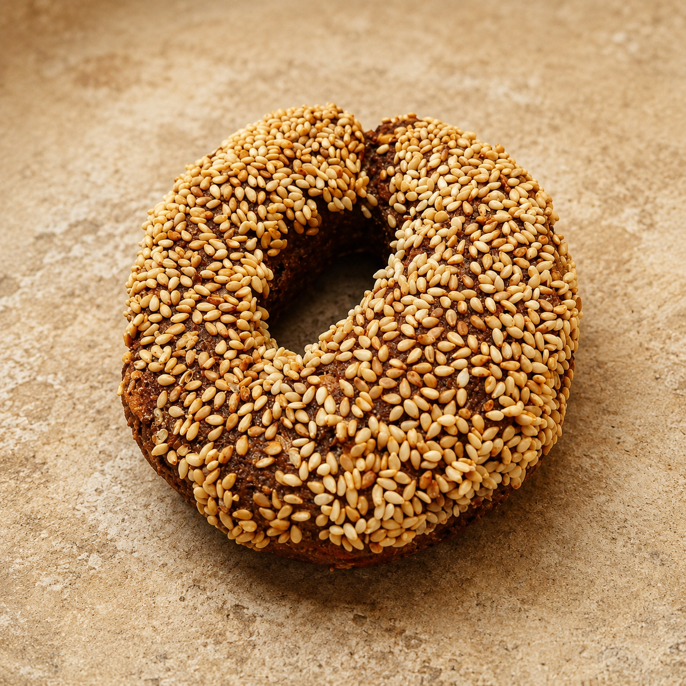
Covrigei din făină fără gluten
Covrigei din făină fără gluten
Ingrediente:
Declarație nutrițională: